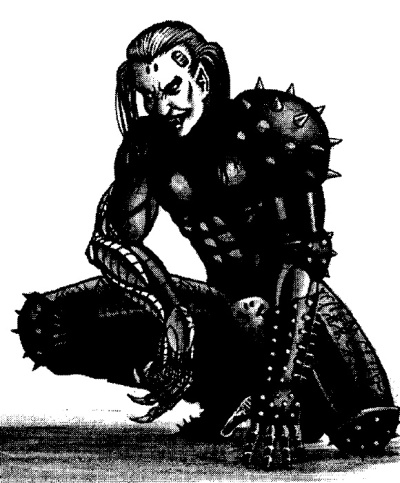
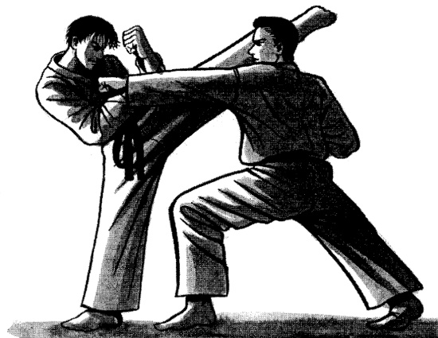
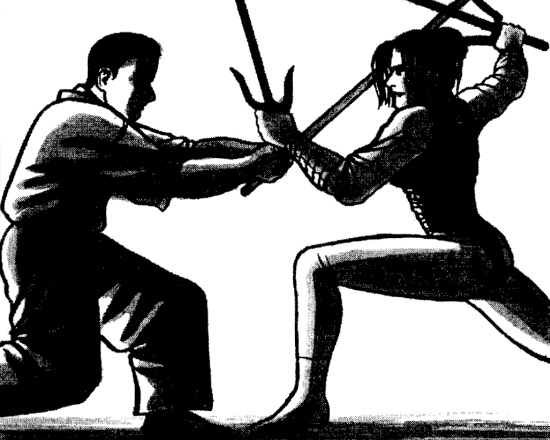

LES ARTS MARTIAUX
- Introduction
- Naissance des arts martiaux
- Baston du vendredi soir
- Attaques-clef
- Manoeuvres d'attaque en mouvement
- Formes d'arts martiaux & attaques-clef
- Les armes des arts martiaux
Introduction
Préface
"Depuis la nuit des temps, la voie des arts martiaux repose sur cinqs piliers : la pratique, la pratique, la pratique, la pratique et la pratique. Eh bien ? Qu'attends-tu ? Vas-y !
Mm ? Moi ? C'est l'heure de ma sieste."
-- Paroles favorites de mon maître
Les arts martiaux chinois, japonais et coréens sont les plus connus dans le monde, mais les gens oublient que ce ne sont pas de simples techniques de combat. Chaque art martial véhicule sa façon de penser, de vivre, tout en étant un véritable "Art". Des conseils pour une vie meilleure sont la dernière chose que vous vous attendiez à trouver dans cet âge décadent, non ?
L'esprit des arts martiaux
De nos jours, la rue est un champ de bataille, les gangs sans codes et morale se battent pour les miettes. Les clans de nomades sont en guerre constante contre les corpos pour un bout de territoire. Les rêveurs se battent avec des mots alors qu'un peu plus loin les ivrognes s'insultent en s'envoyant leur bouteilles vides à la gueule. On ne se bat pas seulement le vendredi soir, mais tous les soirs de la semaine. Les arts martiaux sont tout simplement des techniques pour vous défendre et/ou gagner un combat de rue. Ils sont nettement plus efficaces que la bagarre classique. Un maître peut tuer d'un seul coup et c'est plus facile pour lui que de préparer son petit déjeuner. Ce sont les "beaux-arts" de la baston.
Vous pensez qu'un bon flingue est plus efficace ? Très bien. Et le jour où il s'enrayera ? Qu'il vous glissera d'entre les mains parce qu'elles sont moites de trouille ? Vous allez faire quoi ? Paniquer ? Fuir ? Peut être tenter le contact avec le psycho et ses étripeurs ? De bonnes idées pour se retrouver à la morgue si vous voulez mon avis. C'est pour éviter cela que l'on apprend les arts martiaux, même les soldats sont payés pour prendre des cours !
Bien sûr, de nos jours n'importe qui peut acheter une puce de compétences d'art martial. Passez une bonne journée avec ! Même si vous êtes un peu con sur les bords, vous pourrez jongler avec des nunchakus comme une de ces vieilles stars de cinéma d'action. Au pire, vous trouverez toujours un ami complètement arraché qui ira le faire pour vous. Eh bien mes mignons, j'ai un message pour vous, ne sous-estimez pas l'apprentissage à l'ancienne. Je ne dis pas que les puces sont inutiles, elles ont été développées pour répondre à un besoin. Mais les arts martiaux ne sont pas une mode ou une performance. Ils ne sont pas seulement de "beaux mouvements". Ils sont un Art. L'Art de tuer, et de survivre.
Pendant des millénaires, il n'y avait pas de concepts comme les armes à feu, la cybernétique ou tout ce que nous tenons pour acquis aujourd'hui. Les arts martiaux ont été développés pendant une période où le combat était frontal, au contact. De plus, les artistes martiaux étaient les médecins de l'époque. Si vous voulez apprendre à estropier quelqu'un, vous apprenez l'anatomie et comment arranger ce que vous brisez par la même occasion. Les arts martiaux sont aussi des écoles où l'on vous apprend la patience et la maîtrise de soi. En effet, si vous voulez gagner, vous devez garder votre sang-froid quoi qu'il arrive pour prendre de bonnes décisions dans les pires conditions. Le sang chaud et les pulsions conduisent toujours à la panique et au chaos, qui sont très mal adaptés au combat.Grâce au contrôle de soi vous aurez une vie plus longue et sans doute plus saine. "On gagne d'abord contre soi-même", comme le disent les anciens.
Si vous étudiez les arts martiaux à l'ancienne, vous entendrez forcément ce genre de sermons ennuyeux de la part de votre sensei. Les puces, elles, ne vous pourriront pas l'esprit. Les machines n'ont pas d'esprit (quoique... si on y intègre une IA... enfin non, une puce est loin d'avoir le matos nécessaire pour y installer une IA). Mais quelqu'un avec un mini-sensai branché dans la tête se fera toujours pourrir par une personne qui utilise toute sa tête... et 2 mètres de haut pour 120 kilos de muscles peuvent aussi aider. La concentration aide à tuer et à vider l'esprit du combattant mais vous n'avez pas besoin d'être tendu 25 heures par jour, vous devez vous détendre aussi. Il faut donc d'abord apprendre quand être concentré et quand être relaxé. Plus vous progresserez, plus il vous sera facile de reconnaître le quand. Si vous perdez patience, vous serez soit insatiable soit mort.
Naissance des arts martiaux
"Dans la rue, ceux qui me ressemblent sont autorisés.
Je suis un psycho qui ne réprime pas ses pulsions.
Et tu es un fou qui adore tuer.
Nous sommes des sortes de frères."
-- Chanteur des Stormy Tyrant
Kisaragi Juri (paroles traduites du japonais)
Les arts martiaux sont nés pour servir un besoin : la nécessité de combattre et de se défendre. Si bien que de nombreux arts martiaux ont été créés par et pour des personnes désarmées. Dans l'ancien Japon et l'ancienne Chine, les paysans risquaient d'être tués pour la possession d'une épée, de sorte qu'ils ont développé des moyens pour combattre et tuer en s'en passant. De son coté, la Capoeira a été développée par les esclaves brésiliens pour apprendre à se battre tout en ayant l'air de danser. C'est une des raisons qui explique pourquoi il y a si peu d'arts martiaux européens. Puisque les paysans étaient transformés en soldats en temps de guerre pour se battre pour leurs seigneurs, c'est l'escrime qui est devenue l'art martial de l'Europe.
Les arts martiaux ont évolué à la dure, par des essais et des erreurs, c'était tuer ou être tué. Mais au 20e siècle, de nombreux arts sont devenus des sports, les mouvements restant importants, mais la pensée passant à la trappe. Bien que l'ancienne voie revienne ces derniers temps, la formation reste axée sur les techniques de mise à mort. La plupart des gens, voir des pratiquants, ont oublié que certains arts martiaux peuvent guérir.
De nouveaux styles sont créés chaque jour. Certains, comme les Sovs et les Highriders, ont déjà les leurs. Mais un jour, des arts martiaux créés par les Cyberpunks, pour les Cyberpunks, seront mis au point. Voudriez-vous être le premier fondateur de cette lignée ?
Japon (Nippon)
"Les corps sont rationnels, les esprits sauvages."
-- Huribe Seishi, fondateur du Kenkagei-Koppo
Pour un si petit pays, le Japon regorge d'arts martiaux, c'est un peu LE paradis des arts martiaux. De nombreuses armes exotiques : katanas, shuriken, naginatas, kusari-gama, etc, proviennent du japon et ont été conçues sur la base d'outils agricoles, à cause des lois strictes de l'époque concernant la possession d'armes. La majorité des japonais vous diront que le Sumo ("résister en luttant") est le plus ancien de leurs arts martiaux. C'est presque vrai, le plus vieux s'appelle en réalité le Tegoi ("prier avec les mains" ; "prier les huit millions de dieux et de déesses pour le pouvoir"). Les écrits disent que tout commença dans le Japon ancien avec deux combattants, mais aussi que le vainqueur tua son adversaire d'un coup de pied. Et il n'y a pas de coup de pied au Sumo. Le Tegoi était un style complet, et il se disait qu'un maître pouvait tuer un homme en armure d'un seul coup.
Les techniques mortelles (projection, pied, poing) étaient interdites par la loi, et le Sumo devint un art de prises, même si une charge peut être mortelle. C'est aujourd'hui le sport national du Japon. Les arts plus meurtriers sont passés dans l'ombre, et furent appelés Koppo ("truc d'os"). Ils étaient employés par les clans secrets des ninjas. Plus récemment, ils ont été divisés en deux branches. Celle des ninjas, avec leurs armes étranges, appelée Ninjutsu-Koppo ; et celle à mains-nues, appelée Kenkagei-Koppo ("l'art de la bagarre"). Les deux sont restées secrètes jusqu'au 20ème siècle.
Du 12ème au 16ème siècle, durant la période des guerres internes, plusieurs autres styles virent le jour dans ce chaos politique. L'Aikido ("la voie de la coordination de l'esprit") et le Judo ("la voie souple") furent développés pour la "self-defense". Les styles employant des armes se développèrent aussi, mais n'ont pas été formalisés en tant que Budo ("art martial") avant les années 1600. Cela inclus le Kendo ("sabre"), le Kyudo ("arc"), le Shuriken-jutsu, le So-jutsu ("lance"), etc.
Avant les années 1600, Okinawa était un royaume à part, avec sa propre langue et sa propre culture. Ayant emprunté aux arts martiaux chinois, là-bas fut développé le Te ("main") à partir de ces derniers. Lorsque le Te arriva au Japon, les japonais créèrent le Karate en s'en inspirant.
Chine (Zhung Guo)
"Les deux hommes étaient face à face. Chacun leva son pied et frappa, Nomi no Sukune brisa d'un coup les côtes de Kuyehaya puis lui brisa les reins d'un second coup, ce qui l'a tué. C'est pourquoi les terres de Taima no Kuyehaya ont été saisies et que tout fut donné à Nomi no Sukune."
-- Nihongi, Livre VI (Chapitre : Suinin Tenno). Suinin Tenno / 7ème année / Automne / 7ème mois / 7ème jour.
L'histoire des arts martiaux en Chine est probablement la plus longue du monde et sa civilisation est clairement la plus ancienne. De part l'étendue immense de la Chine, elle a connu en nombre certainement beaucoup plus de styles que le Japon. Mais énormément de ces arts martiaux sont nés et ont disparus sans laisser de traces tangibles. Nous n'avons aucune preuve concrète de quand les arts martiaux ont commencé en Chine. Peut-être que dès la préhistoire, des styles à frappes comme la Boxe et le Karate, ou des styles à prises comme le Sumo et le Koppo étaient déjà utilisés. La situation est identique à celle décrite plus haut pour le Sumo et le Koppo, mais beaucoup plus tôt dans l'Histoire.
Des preuves montrent que la majorité des arts modernes sont reliés aux temples Shaolin. Le Kung Fu Shaolin a été développé après que les prêtres bouddhistes ont eu côtoyés les arts indiens comme le Kalari. Ceci est à la racine du Choy Li Fut moderne (nommé ainsi d'après son fondateur). Le Choy Li Fut se retrouve principalement au sud du fleuve Yangtze et est donc appelé un style "du sud". Les styles du sud en Chine se concentrent sur la puissance physique, la vitesse et les enchaînements rapides de coups.
Le Tai Chi Chuan ("l'axe de toute nature") est aussi apparenté au Kung Fu de Shaolin. Le Tai Chi fait partie des styles "du nord", il se concentre sur la force intérieure, l'équilibre de l'énergie et la transition harmonieuse entre immobilité et action, et vice versa.
Le Kung Fu "animal" a été développé vers le 12ème ou 13ème siècle, les origines ne sont pas claires. Beaucoup de sous-styles y sont rattachés, chacun reprenant comme modèle les actions d'animaux. Certains de ces styles sont du sud et d'autres du nord, mais cette distinction n'est qu'une convention pratique. Ils ne représentent que le point de départ ; ces styles se sont propagés et ont évolués à travers le monde. Les deux courants se rejoignent lors de l'accession à la Maîtrise. Les débutants vont se concentrer sur les techniques majeures de chaque style, mais les Maîtres ont recours à la fois à la puissance du nord et à l'équilibre du sud pour maximiser leurs actions.
Il y a bien sûr d'autres styles, mais ils sont beaucoup trop nombreux, et souvent pas assez différents les uns des autres pour pouvoir les détailler ici.
Corée (Hanguk)
"Tout comme la Nature, les arts martiaux doivent constamment évoluer."
-- Bruce Lee
"Bruce Lee était un véritable artiste martial !
Sensei a créé le Jeet Kune Do en s'inspirant d'autres styles, il nous a appris l'aspect mortel et les vertus des arts martiaux ! Même si la Loi de Murphy l'a tué a 32 ans, il a changé tellement de choses, en défiant le monde avec toutes ses forces !"
-- Un fan de films d'action
L'art martial coréen le plus connu est sans conteste le Tae Kwon Do. Il a été développé, mis au point et se répandit comme une traînée de poudre pendant le 20e siècle. Le fondateur du Tae Kwon Do s'est inspiré du Karaté, mais a voulu en faire quelque chose de plus pratique et puissant. L'origine de cet art martial provient de l'histoire coréenne.
Dans les temps anciens, il y avait trois royaumes sur la péninsule coréenne : Koguryo, Silla et Faekche, tous concurrents pour la domination. Certains textes mentionnent un art nommé Tekkyon développé au 7ème siècle en Silla. Grâce à cet art ainsi qu'à un groupe de jeunes hommes appelés les Hwarang-do, Silla, le plus petit des trois royaumes, a dominé la péninsule. Après un certain temps, le Koguryo s'étant aguerrit, il a reconquis le territoire. La faction Silla est tombée, mais le Tekkyon n'est jamais vraiment mort. Il a été schématisé et redéveloppé au cours des années 1950 en tant que Tae Kwon Do.

Baston du vendredi soir
"Saleté de cybernétique ! Les humains peuvent écraser des méchas de cent façons en utilisant les arts martiaux !"
"C'est vrai. Et si, vous autres pratiquants d'arts martiaux, vous vous équipiez et vous boostiez un peu, vous seriez encore plus forts, en théorie."
"Heu... et... mais..."
-- Stormy Terror et Shino-Migiude (Le Bras Droit de la Mort), Osaka, Japon
Dans BDVS, il y a deux types de combat à mains nues : la Lutte et les Arts Martiaux. Le Lutte regroupe n'importe quel genre de combat de rue sans aucun entraînement : on se tabasse dans un bar, deux gamins s'embrouillent à la récré... A chaque fois que les adversaires n'ont aucune formation dans un art martial ou un style de combat, c'est de la Lutte. L'expérience se gagne à la dure, en combattant beaucoup.
D'autre part, si les adversaires ont eu un entraînement quelconque, on considère qu'ils utilisent un Art Martial. Et cela inclut n'importe quelle formation au combat : la Boxe, le Kung Fu, le Karate, la Savate... tout ce qui nécessite de la pratique et un apprentissage.
Pourquoi cette distinction ? Les pratiquants d'Arts Martiaux ne s'entraînent pas seulement pour savoir comment frapper mais aussi pour faire le plus de dégâts. Il arrive rarement, voire jamais, qu'une terreur des cours de récré tue sa victime d'un coup de poing. En revanche, un coup du tranchant de la main ("shuto-uchi") porté à la gorge ou un coup de talon à la tête, peut facilement tuer quelqu'un. Il suffit de savoir comment faire. De fait, leurs attaques sont beaucoup plus dangereuses que celles d'une personne utilisant Lutte. En outre, elles sont de plus en plus mortelles en fonction de la progression du pratiquant.
Pour rappel la formule de combat au corps à corps est la suivante :
ATTAQUANT :
REF + Niveau d'Art Martial + Bonus/Pénalités + 1D10
vs.
DEFENSEUR :
REF + Niveau d'Art Martial + Bonus/Pénalités + 1D10
Le plus grand score l'emporte, en cas d'égalité le défenseur gagne.
Bonus aux dégâts
Vous avez pratiqué un art martial, hein ? Ok, écrivez bien ce niveau de compétence sur votre feuille pour ne pas l'oublier. Vous pouvez ajouter ce niveau en Art Martial aux dégâts que vous faites sur une Attaque-clef (une attaque propre à votre Art Martial, voir plus bas). Vous ajoutez aussi à ces dégâts un bonus venant de votre CON.
Disons que vous avez l'Art Martial Capoeira à +10, et que vous êtes tellement cybernétisé que vous avez une CON de 15. Si vous avez installé des Pistons Hydrauliques, vos dégâts de base sur un coup de pied sont de 6D6 (avec une cyberjambe 2D6 et x3 pour les pistons). Vos dégâts moyens sont de 39 points et vos maximums à 54. Et s'il se trouve que vous avez aussi un Pied à Pointes, vous y ajouter 2D6 de plus (46 moyen et 66 max)...
Toutes les attaques avec un art martial n'ont pas de bonus aux dégâts. Ecraser, n'a aucun bonus puisque cela dépend directement de la cybermain, ce n'est pas une attaque d'art martial. Les manoeuvres de défense, comme Parade, Esquive ou Se Libérer, n'ont pas non plus de bonus aux dégâts bien entendu. Si vous utilisez votre compétence martiale pour lancer un objet, votre bonus aux dégâts est divisé de moitié (voir plus bas).
Table des bonus aux dégâts
| CON | Corps à corps | Arme de jet |
| 2 | -2 | -1 |
| 3-4 | -1 | -1 |
| 5-7 | +0 | +0 |
| 8-9 | +1 | +1 |
| 10 | +2 | +1 |
| 11-12 | +4 | +2 |
| 13-14 | +6 | +3 |
| 15+ | +8 | +4 |
| Attaque-clef | +niv * | +niv * |
* Niveau de compétence de l'Art Martial.
Attaques-clef
Dans le tableau "Formes d'arts martiaux & attaques-clef", repérez votre style. Il y a des nombres avec un (+) pour certaines actions, comme Poing ou Pied. Ce sont des Attaques-clef, les points forts de ce style. Ces nombres sont les bonus pour Toucher. Par exemple, le Karate a des Attaques-clef en Poing, Pied, Désarmer et Bloquer. Ce sont les fondamentaux d'un pratiquant du Karate.
Il y a treize catégories d'action dans le combat à mains nues. Parmi ces dernières, les actions avec un bonus sont des Attaques-clef pour ce style. Si l'action n'est pas une Attaque-clef dans votre propre style, vous pouvez quand même l'exécuter, mais vous n'aurez pas de bonus au Toucher ni aux dégâts.
Exemples : un boxeur (Art Martial Boxe à +5) tente un coup de poing. Il ajoute +3 (bonus d'attaque clef) au toucher, et +5 et son modificateur de CON aux dégâts. S'il tente un coup de pied (disons qu'on lui a coupé les bras...) il n'aura qu'un seul bonus, son modificateur de CON aux dégâts. Un maître de Tae Kwon Do applique ses deux modificateurs pour les coups de poings et les coups de pieds mais pas pour les poussées. Un bagarreur peut tout tenter, mais il dispose uniquement de son modificateur de CON aux dégâts.
Si vous êtes un adepte des arts martiaux, certaines attaques-clef peuvent avoir des effets spéciaux, lisez la suite !
Portée des attaques de corps à corps
De la même manière que pour les armes à feu, il existe différentes portées pour le combat au corps à corps : la plus longue est la Portée de Tir, puis la Portée de Frappe et finalement la Portée de Saisie.
La Portée de Tir est la distance où vous ne pouvez pas attaquer avec l'aide d'une arme de mêlée et où vous devez lancer une arme pour blesser l'adversaire.
La Portée de Frappe est la distance que vous pouvez atteindre avec une arme. Certaines armes comme le Naginata peuvent avoir une portée conséquente (2 mètres).
La Portée de Saisie est celle où vous pouvez frapper et saisir votre adversaire.
Chaque portée à ses attaques-clef (voir ci dessous). Si une attaque-clef n'est pas indiquée dans une portée, elle n'est pas réalisable. Some key attacks are split as to what you use, such as Jump Kick (Kick) and Polearm Strike (Strike) that use the bracketed column in the Form & Specialization table.
Table des attaques-clef
| Portée | Modificateur | Attaques-clef possibles |
| Tir | -0 | Bloquage, Esquive, Coup de Pied Sauté |
| varie | Arme de Jet, Poussée | |
| Frappe | +5 | Arme d'Hast |
| +3 | Arme de Mêlée | |
| -0 | Coup de Poing, Coup de Pied, Désarmement, Balayage, Blocage, Esquive, Poussée, Etourdissement | |
| -3 | Saisie | |
| -5 | Arme de Jet | |
| Saisie | -0 | Désarmement, Saisie, Projection, Immobilisation, Etranglement, Dégagement |
| -3 | Coup de Poing, Coup de Pied, Balayage, Blocage, Etourdissement | |
| Esquive | -5 | Arme de Mêlée |
Changement de distance
- Tir > Frappe : chargez ! Si vous avez le meilleur MV, vous pourrez entrer dans la zone de Frappe (selon l'avis du MJ).
- Frappe > Saisie : effectuer un jet pour Saisir.
- Saisie > Frappe : Parez ou Dégagez vous.
- Frappe > Tir : fuyez ! Si vous avez le meilleur MV, vous pourrez rejoindre la zone de Tir (selon l'avis du MJ).
Porter des vêtements ou non ?
Certains arts martiaux ont été créés pour affronter des adversaires habillés ou en armure. Ainsi, si un adversaire est nu jusqu'à la taille (un cyborg intégral ne peut pas être saisi comme des vêtements), ces arts martiaux n'ont pas (ou moins) d'effet. Ils ont un malus de -5 pour toutes les attaques à l'exception d'Arme de Mêlée/Jet, Pieds et Poings.
Styles basés sur les vêtements : Judo, Sambo.
Par exemple, un Yakuza japonais retire sa chemise / veste avant un combat à main nue pour deux raisons.
1) Il gène un éventuel judoka
2) Leurs tatouages aident à effrayer leurs adversaires. Ils gagnent un bonus de +3 à Intimidation.
Mais, si vous êtes Yakuza, n'oubliez pas d'envelopper votre abdomen avec un bandage serré. Pourquoi ? Pour éviter que vos tripes ne se répandent dans la rue si vous êtes éventré par votre adversaire.

Attaques-clef
ATTAQUE A L'ARME DE MÊLÉE/DE JET
Ceci comprend les techniques qui exploitent une arme. Pour connaître les armes utilisables pour chaque style, consultez la page des armes blanches.
Compétences utilisables pour les attaques à l'Arme de Mêlée : Arts Martiaux, Escrime (épée) ou Mêlée (pour les armes contondantes ou improvisées). Ces dernières comprennent les barres, les bouteilles, les battes, les poêles à frire; bref, tout ce que vous pouvez dénichez. Les caractéristiques de ces armes sont à discrétion du MJ.
Bonus/Pénalité pour les attaques avec une Arme de Mêlée :
+ Bonus de l'attaque-clef + Précision de l'arme
Cette attaque-clef inclus également les armes de jet. Elle est utilisée pour les arcs et les armes de jet comme les fléchettes, les javelots et les shurikens. La table de localisation des armes de jet est identique à celle des armes à feu. Si le défenseur est un artiste martial, il peut faire un jet de Perception et s'il réussit peut Esquiver ou Parrer le projectile. Dans ce cas, l'attaque à l'Arme de Jet devient un jet d'opposition comme la Mêlée. N'oubliez pas de prendre en compte les pénalités liées à la portée.
Compétences utilisables pour les attaques à l'Arme de Jet : Arts Martiaux, Tir à l'Arc (arcs) ou Athlétisme (lancer d'objets).
Bonus/Pénalité pour les attaques avec une Arme de Jet :
+ Bonus de l'attaque-clef + Précision de l'arme - Pénalité de distance
Table des pénalités de distance pour les armes de jet
| Portée | Pénalité |
| Contact | -5 |
| Courte | -0 |
| Moyenne | -5 |
| Longue | -10 |
| Extrême | -15 |
POING ET PIED
Normalement, les humains ont quatre armes : les mains et pieds droite et gauche. Les dégâts de base pour le Poing sont de 1D6/2, et ceux du Pied sont de 1D6. Les cybermembres font des dégâts augmentés : les normaux font 1D6 au Poing / 2D6 au Pied, avec Myomars Epaissis on a 2D6 / 4D6 et avec les Hydrauliques on a 3D6 / 6D6. Pour plus de détails, reportez-vous à la section "Les armes des arts martiaux".
Cyberpunk 2020 établit que si on utilise deux armes en même temps, on doit attribuer une pénalité de -3 au deux. Cela inclut la Lutte mais exclut les Arts Martiaux. Par exemple, en Boxe on peut feinter un direct du droit pour attaquer avec un crochet du gauche. Si on apprend l'art de la Boxe et qu'on travaille dur on peut neutraliser ces pénalités. Oui, un Art Martial avec une Attaque-clef Poing peut être utilisé avec les deux mains sans pénalité : la mention Poing inclut aussi bien un direct, que les coudes, le tranchant de la main, une baffe, etc. Se reporter au tableau "Formes d'arts martiaux & attaques-clef", pour la liste complète des styles.
Qu'en est-il des coups de pied ? Est-ce que les arts martiaux avec des attaques-clef en Pied peuvent utiliser les deux pieds sans pénalités ? Généralement, non. En théorie, la plupart des Arts Martiaux aux pieds utilisent une attaque en combinaison de trois coups : poing gauche puis droit et coup de pied. Si on a les deux pieds en l'air, on tombe au sol (c'est clairement comme un drop-kick au catch), mais comme pour beaucoup de choses, il y a des exceptions.
Il existe quatre styles qui peuvent utiliser les deux pieds en même temps sans pénalité : la Savate, la Capoeira, le Tae Kwon Do et la Boxe Thaï.
Selon ces règles, les attaques des deux mains ou des deux pieds sont considérées comme une action. Mais ce n'est pas le cas d'un enchaînement poing-pied. Si vous voulez utiliser un coup de poing et de pied ensemble dans le même round, vous devez appliquer une pénalité de -3 à chaque action, selon la règle des actions multiples. Vous ne pouvez pas combiner les quatre attaques sans pénalité même si vous êtes le dieu de la Capoeira.
De plus, les armes liées aux poings et aux pieds (Poing américain, Bottes cloutées, Cybermain) peuvent utiliser l'Attaque-clef sans pénalité. Si elles sont tenues en main et qu'on peut les laisser tomber (Couteau, Matraque, etc), alors elles utilisent l'attaque classique.
Compétences utilisables pour les coups de Pied/Poing : Arts Martiaux, Lutte.
Bonus/Pénalité pour les coups de Pied/Poing :
+ Bonus de l'attaque-clef + Précision de l'arme (si attachée ou fixée au membre)
DESARMER
Sur un jet réussi, vous enlevez ou faites tomber une arme de la main de votre adversaire. L'attaquant déclare vouloir attaquer pour Désarmer. Il ajoute sa compétence Art Martial/Lutte etc. à son REF et lance 1D10. Le MJ peut y appliquer une pénalité pour la taille : cible petite -4, cible minuscule -6.
Si le défenseur est en Parade complète (voir ci-dessous), l'attaquant obtient un +6.
Si le défenseur est en Esquive complète (voir ci-dessous), l'attaquant subit un -3.
Si vous n'avez pas d'Attaque-clef Désarmer (Lutte, Sumo, etc), vous ajoutez le bonus dégâts de la CON du défenseur au seuil de difficulté. Il est plus compliqué de désarmer un adversaire avec une poigne ferme.
Le défenseur ajoute Esquive & Evasion, Athlétisme ou Art Martial (Esquive) à son REF et lance 1D10, mais il ne peut pas ajouter Escrime ou Mêlée, car il n'essaye pas de parer avec son arme.
Compétences utilisables pour les Désarmements : Arts Martiaux, Escrime, Mêlée et Lutte.
Bonus/pénalités pour Désarmer :
+ Désarmer de l'Attaque-clef (ou – le bonus dégâts de CON) + Précision de l'arme de l'attaquant (si on utilise une arme pour Désarmer) + la pénalité de taille pour l'arme du défenseur
Comparez les résultats de l'attaquant et du défenseur ; si celui de l'attaquant est supérieur, le défenseur ne prend aucun dommage mais il perd son arme. Note : les armes qui ne sont pas tenues à la main mais implantées, équipées, attachées, etc ne peuvent pas subir une attaque de Désarmer. Essayez donc d'enlever à quelqu'un ses Wolvers ou ses Gants cloutés et vous verrez ce qui arrive...
Table des malus en fonction de la taille de l'arme du défenseur
| Arme | Malus |
| Normal : fusil, épée | -0 |
| Petit : pistolet, pistolet mitrailleur, couteau | -4 |
| Minuscule : shuriken, derringer | -6 |
BALAYER
Projette l'adversaire au sol d'un coup de pied. Un adversaire au sol souffre d'une pénalité de -2 à ses attaques jusqu'à ce qu'il se relève (ce qui prend une action), pendant ce temps vous avez un bonus de +2 aux vôtres. Une fois mis à terre, il faudra attendre que votre adversaire se relève pour le balayer de nouveau. Bien sûr, rien ne vous empêche de le tabasser une fois mordu la poussière...
Si vous avez également une attaque-clef Pied, vous pouvez faire un Coup de pied Balayette avec une pénalité de -3. Le jet d'attaque à réaliser est Balayer, pas Pied. Sur un jet de Balayer réussi (à -3), vous faites 1D6+3 de dégâts, et l'adversaire fait un jet de Sauvegarde contre l'Evanouissement à -2. Si vous avez des cyberjambes, vous utilisez les dégâts de la cyberjambe +3 (si Hydrauliques alors 6D6+3). Vous bénéficiez aussi des bonus habituels listés ci-dessous pour Balayer.
Compétences utilisables pour les attaques de Balayage : Arts Martiaux uniquement.
Bonus/Pénalité pour les Balayages :
+ Bonus de l'attaque-clef + Précision de l'arme (Hanbo, Bo, etc)
BLOQUER/PARRER
Bloquer/Parer est une manoeuvre visant à intercepter l'attaque de votre adversaire en utilisant votre arme, ou vos mains et pieds. C'est différent d'Esquiver, car en réalité vous entrez en contact avec son arme. Esquiver c'est éviter complétement tout contact. Bloquer est parfait pour ces espaces restreints où vous n'avez pas la place pour Esquiver. Vous devez déclarer quelle arme vous utiliserez pour Bloquer/Parer avant de le faire : épée, main gauche, pied droit, jitte, etc.
Compétences utilisables pour une défense Bloquer/Parer : Arts Martiaux, Escrime, Mêlée (armes contondantes et improvisées), Lutte (mains et pieds).
Bonus/Pénalité pour Bloquer/Parer :
+ Défense-clef "Bloquer" + Précision de l'arme (si utilisée)
Sur un jet de Parer réussi, vous pouvez neutraliser les dégâts grâce à votre arme et/ou armure. Cependant il faut un jet pour vérifier que l'objet utilisé pour Parer ne se brise pas. Dans le cas d'une arme tranchante, lancez 1D10 et regardez le tableau ci-dessous :
| Objet de parade | Se brise sur (1D10) |
| Arme tranchante normale | 1 |
| Mono-2 * | 1-2 |
| Monolame normale | 1-4 |
| Powersword * | 1-5 |
* Cf. Chrome 1, page 55.
Si ce n'est pas une arme tranchante, et qu'il a des PDS (et des PA comme des cybermains ou une table), l'objet servant à la parade prend les dégâts en premier. S'il n'a pas de PDS, vous devez calculer les PP (Points de Parade). Les PP sont égaux au maximum des dégâts que peut causer l'arme : un Tonfa par exemple cause 3D6 de dégâts et possède donc 18 PP. Dans le cas d'une à distance, utilisez le tableau ci-dessous :
| Objet de parade | PP |
| Sarbacane | 0 |
| Arc | 5 |
| Pistolet | 10 |
| Pistolet mitrailleur | 15 |
| Fusil d'assaut ou à pompe | 20 |
Ces types d'armes peuvent bloquer des dégâts égaux aux PP. S'ils sont dépassés (par exemple, mon coup de pied fait 20 points de dégâts contre un Tonfa), les dégâts supplémentaires sont encaissés par l'arme, et les PP de l'arme de parade sont réduits de la valeur des dégâts supplémentaires. L'arme se brise lorsque les PP sont réduits à 0. Dans ce cas on ne peut plus s'en servir, et vous ou votre armure subissez les dégâts.
Même sur un jet de Parer raté, ou quand votre arme se brise, vous pouvez réduire les dégâts. Les maîtres en Arts Martiaux savent s'écarter d'un coup de juste ce qu'il faut pour sauver leur peau. Si votre style comprend la défense-clef Bloquer, votre armure prend des dégâts, et le reste est diminué de votre niveau dans la compétence Art Martial. Ensuite, vous appliquez la réduction de dégâts de votre CON pour connaître l'issue finale de ce coup.
Exemple : Rimbo est attaquée dans son appartement par une bande de tueurs de la Triade. Elle les a tous liquidés sauf un grâce à son FN-RAL adoré avant de se retrouver sans munition. Chan Li l'attaque avec son monokatana Kendachi. Rimbo fait un jet de Bloquer avec son FN-RAL. Les dégâts sont de 18, mais comme un FN-RAL possède 20 PP, aucun problème. A l'action suivante, Chan fait une attaque critique (double dégâts) et inflige 35 points de dégâts ! Le FN-RAL se voit réduit à 5 PP (20 - 15 = 5). L'attaque suivante de Chan fait 15 points. Le FN-RAL de Rimbo est coupé net en deux et elle doit subir le reste des 10 points de dégâts (15 - 5 = 10). Puisqu'elle a la Capoeira à +10 (la Capoeira donne la défense-clef Bloquer), et qu'elle n'a pas d'armure (elle dormait quand ils ont débarqué), elle peut ramener les dégâts à 0. Mais si elle avait été juste une de ces punks des rues elle aurait tout pris.
Si vous êtes pratiquant d'Arts Martiaux et que vous voyez un adversaire faire un lancer (jet de Perception), vous avez une chance de parer l'arme de jet. Référez-vous à la section Frapper/Lancer. En cas de succès, vous pouvez Bloquer/Parer le projectile comme si vous étiez en mêlée. Selon la taille de l'arme vous pouvez appliquer un bonus de parade (plus l'arme est grande plus il est facile de la parer).
| Taille de l'arme de jet | Bonus de parade |
| Javelot ou hache de jet | +6 |
| Flèche ou carreau | +4 |
| Shuriken ou fléchette | +0 |
ESQUIVER
Esquiver est une autre manoeuvre de défense. Sur un jet réussi d'Esquiver, vous ne subissez aucun dégât car vous n'avez pas été touché. Même en cas d'échec, vous pouvez réduire les dégâts comme lors d'une action Bloquer. Retirez les dégâts à votre armure, puis appliquer votre réduction venant de votre CON et soustrayez votre niveau en Art Martial si votre style possède la défense-clef Esquiver.
Compétences utilisables pour une défense Esquiver : Arts Martiaux, Esquive, Athlétisme (si le MJ le permet).
Bonus/Pénalité pour Esquiver :
+ Défense-clef "Esquiver"
Si vous êtes pratiquant d'Arts Martiaux et que vous voyez un adversaire faire un lancer (jet de Perception), vous avez une chance d'esquiver l'arme de jet. Référez-vous à la section Bloquer/Parer. En cas de succès, vous pouvez Esquiver le projectile comme si vous étiez en mêlée. Selon la taille de l'arme vous pouvez appliquer un bonus d'esquive (cf. le tableau de Bloquer).
PARADE ET ESQUIVE TOTALES
Ce sont des versions différentes des manoeuvres défensives que tous les punks (y compris ceux ne pratiquant pas un Art Martial) peuvent faire. Vous ne pouvez déclarer qu'une Esquive Totale ou Parade Totale au cours d'un round de combat. Vous devez déclarer laquelle vous choisissez à votre première action ou première défense, selon laquelle arrive en premier. Lorsque vous êtes dans une défense Totale, vous subissez -3 à toutes vos autres actions.
Bonus pour Parade Totale : vous n'avez pas de jet à faire pour Parer. Toutes les attaques d'armes de mêlée (et d'armes de jet si vous êtes pratiquant d'un Art Martial) de l'adversaire toucheront automatiquement votre arme de parade jusqu'à ce qu'elle se brise. Vous devez faire un jet à chaque coup pour vérifier si elle se brise ou non.
Bonus pour Esquive Totale : tous les jets pour frapper de l'adversaire sont à -2 (y compris les armes de jet si vous pratiquez un Art Martial).
Si vous pratiquez un style avec des défenses-clef, vous pouvez réduire les dégâts comme indiqué dans la section sur les défenses-clef décrite plus haut.
Quand vous êtes dans une manoeuvre de défense Totale, vous pouvez tentez un Parer ou un Esquiver normalement, mais il y a quelques limites. Si vous voulez diminuer les dégâts en utilisant votre Art Martial deux fois, les deux manoeuvres doivent être différentes et votre Art Martial doit avoir à la fois Parer et Esquiver comme défenses-clef.
Parade Totale + Parer normal : réduction des dégâts grâce à Art Martial, une fois.
Parade Totale + Esquiver normal : réduction des dégâts grâce à Art Martial, deux fois.
Esquive Totale + Esquiver normal : réduction des dégâts grâce à Art Martial, une fois.
Esquive Totale + Parer normal : réduction des dégâts grâce à Art Martial, deux fois.
Si vos niveaux en Parer et en Esquiver sont différents, réduisez les dégâts indépendamment.
Exemple : Big Bob a Karate à +7 et Sumo à +4. Il y a une valeur en Bloquer/Parer avec le Karaté mais pas en Esquiver, et le Sumo a une valeur en Esquiver mais pas en Bloquer/Parer. Donc, quand il utilisera une défense Parade Totale et une action Esquiver normale (ou l'inverse), il réduira les dégâts d'un coup (ou d'un lancer) de 11 points (7 + 4 = 11).
Vous vous dites alors : "Wahou, les pratiquants d'Arts Martiaux sont invincibles !". Restez calme, les Arts Martiaux ne servent à rien contre les armes à feu, les lasers, le gas, l'acide, les explosions...
AGRIPPER
Cette action-clef est utile pour passer de la portée nécessaire pour porter un coup, à la portée nécessaire pour attraper l'adversaire. Si vous la réussissez, vous pouvez alors Agripper votre adversaire et tenter à votre prochaine action une Projection, une Immobilisation/Fracture, une Saisie ou un Etranglement/Ecrasement.
Le défenseur peut utiliser Parer, Esquiver ou Dégagement afin d'empêcher l'attaquant de l'Agripper. Si le jet de l'attaquant est réussi, le défenseur a -2 à toutes ses actions sauf Dégagement. Mais si le défenseur essaye aussi d'Agripper, alors les deux sont en contact et s'Agrippe mutuellement (pas besoin de jets ni pour l'attaque ni pour la défense), sans aucune pénalité pour aucun des deux.
Compétences utilisables pour une attaque Agripper : Arts Martiaux et Lutte.
Bonus/Pénalité pour Agripper :
+ Attaque-clef "Agripper"
Si vous voulez retourner à portée de coup alors que vous êtes à portée d'Agripper, vous devez réussir un jet en Parer ou Esquiver. Mais si vous êtes Agrippé, vous devez réussir un Dégagement d'abord. Être Agripper est une situation persistante. Si le défenseur ne réussit pas à se Dégager, l'action Agripper continue automatiquement à moins que l'attaquant tente une autre attaque qu'une Immobilisation/Fracture ou un Etranglement/Ecrasement.
PROJECTER
Une fois que vous tenez votre adversaire vous pouvez tentez de le Projeter et de l'assommer dans la foulée. Sur une attaque réussie la victime prend 1D6 points de dommages et doit tenter un jet de résistance à l'Evanouissement à +2. Un adversaire au sol souffre d'une pénalité de -2 à ses attaques jusqu'à ce qu'il se relève (ce qui prend une action), pendant ce temps vous avez un bonus de +2 aux vôtres. Une fois que vous avez projeté l'adversaire il faut l'attraper de nouveau pour recommencer... mais vous vous en doutiez non ?
Vous allez dire "1D6 ? Avec mon armure ça passe nickel !". Faux ! Ces dégâts sont infligés malgré l'armure (à moins que vous ne soyez un full-borg). Pire, l'attaquant y ajoute son modificateur de CON et son niveau de compétence dans l'art martial, le Modificateur de Constitution du défenseur étant soustrait.
En cas d'échec vous restez en Saisie et vous pouvez tentez plusieurs projections dans un même round sur plusieurs actions (avec le malus dû aux actions multiples).
Compétences utilisables pour la Projection : Arts Martiaux, Athlétisme.
Bonus/pénalités pour une Projection :
+ Attaque-clef "Projecter"
IMMOBILISATION/FRACTURE
Il faut d'abord que vous ayez Agrippé l'adversaire. Une Immobilisation est une manoeuvre de soumission consistant à verrouiller les articulations de l'adversaire et l'immobiliser (ou infliger une douleur). Elle peut être aussi compliquée qu'une clef de poignet en Aïkido, ou aussi simples qu'un plaquage de Catch. Un défenseur Immobilisé ne peut tenter qu'un Désengagement.
Si vous réussissez votre Immobilisation, vous pouvez Projeter ou Etrangler/Ecraser automatiquement, car vous avez immobilisé votre cible (aucun jet n'est requis). Vous pouvez tenter de briser ses articulations en réussissant un jet contre celui en Dégagement du défenseur au cours de l'action suivant l'action d'Immobilisation, mais vous ne pouvez pas Fracturer automatiquement.
Compétences utilisables pour une attaque Immobilisation/Fracture : Arts Martiaux uniquement.
Bonus/Pénalité pour Immobilisation/Fracture :
+ Attaque-clef "Immobilisation/Fracture"
Pour l'action Fracture vous devez avoir Immobilisé un bras ou une jambe (si vous Immobilisez la tête ou le corps, vous pouvez Projeter ou Etrangler/Ecraser). Si votre jet de Fracture passe, vous faites 1D6 de dégâts, et la victime doit réussir un jet de Sauvegarde contre l'Evanouissement à +2. La majeure partie des armures et des cybermembres (même les borgs complets) ne protègent pas contre la Fracture, parce que vous vous attaquez à leur point faible, les articulations. Les cybermembres à double articulations sont une exception car ils confèrent plus de flexibilité : il y a un -4 au jet pour les briser. Il faut 9 points de dégâts pour briser un membre humain (en une attaque), et les cybermembres peuvent subir autant que leur PDS (cumulatifs) avant de se briser : un cybermembre normal est inutilisable après avoir perdu 20 points et casse complètement après 30 points. Si vous avez totalement abîmé un membre, vous devez Immobiliser un autre membre avant de pouvoir briser celui-là également.
Les Immobilisations et les Fractures sont des actions persistantes, si le défenseur ne réussit pas à se Dégager, l'Immobilisation/Fracture continue automatiquement sauf si l'attaquant tente une autre Attaque-clef. Si une Fracture est maintenue sur plusieurs rounds, les dégâts sont infligés une fois par round (maximum) automatiquement.
ETRANGLEMENT/ECRASEMENT
Si vous Agrippez le corps ou la tête, vous pouvez tenter un Etranglement (contre le Dégagement du défenseur). Si vous avez une cybermain, vous pouvez Ecraser n'importe quelle partie de l'adversaire. Si vous réussissez un Etranglement/Ecrasement, le défenseur à -2 à toutes ses actions sauf Dégagement.
Si vous avez Immobiliser le défenseur, vous pouvez faire un Etranglement/Ecrasement automatiquement, car vous l'avez immobilisé (vous ne faites pas de jet).
L'Etranglement/Ecrasement est une action persistante, si le défenseur ne réussit pas se Dégager, l'Etranglement/Ecrasement continue automatiquement sauf si l'attaquant tente une autre Attaque-clef. Les dégâts d'un Etranglement/Ecrasement sont infligés une fois par round (maximum) automatiquement, s'il est maintenu sur plusieurs rounds.
Les dégâts d'Etranglement sont de 1D6 (+ bonus de précision de l'arme si c'est une arme d'Art Martial ; voire description) + bonus de dégâts de CON + le niveau en Art Martial (s'il y a une attaque-clef Etrangler), une fois par round. La majorité des armures ne protège pas contre une attaque d'Etrangler, à moins qu'elle ne soit faite spécialement pour protéger le cou contre ce type de dégâts. Bien entendu les borgs complets ne sont pas affectés par un Etranglement !
Les dégâts d'Ecrasement sont de 2D6/4D6/6D6 (normal/Myomars Epaissis/Vérins Hydrauliques) + niveau en Art Martial (s'il y a une attaque-clef Etrangler), une fois pas round. Le bonus de dégâts de CON n'est pas appliqué à ces dégâts.
Les dégâts maximums d'un Ecrasement sont les mêmes que pour une Fracture. Vous pouvez tenter un cyber-Ecrasement pendant que vous Etrangler avec vos mains. Dans ce cas, vous n'appliquer que les dégâts les plus grands.
Compétences utilisables pour une attaque Etranglement/Ecrasement : Arts Martiaux et Lutte.
Bonus/Pénalité pour Etranglement/Ecrasement :
+ Attaque-clef "Etranglement/Ecrasement"
DEGAGEMENT
C'est la défense à appliquer contre des attaques à portée d'Agrippement. Sur un jet réussi, vous pouvez vous libérer d'une attaque persistante. Si vous subissez une Fracture, vous vous Dégagez en Immobilisation, et d'une Immobilisation, d'un Etranglement ou d'un Ecrasement vous vous dégagez en Agripper. Réussir à vous Dégager d'un Agripper vous ramène à être à portée d'Agrippement.
Fracture --> Immobilisation/Etranglement/Ecrasement --> Agripper --> Portée d'Agrippement
Compétences utilisables pour une défense Dégagement : Arts Martiaux et Esquive.
Bonus/Pénalité pour Dégagement :
+ Défense-clef "Dégagement"
Vous pouvez aussi utiliser cette défense-clef comme une action active (une attaque). Le "défenseur" devra utiliser l'attaque-clef appropriée à la situation (Agripper/Immobiliser/Etrangler) pour contrer. Si l'attaquant bat le jet du défenseur, l'attaquant pourra échapper à la situation et se mettre à distance de mêlée ou de jet : voire plus loin s'il court assez vite.
MANOEUVRES D'ATTAQUE EN MOUVEMENT
Habituellement, attaquer en se déplaçant prend deux actions, une pour le mouvement et l'autre pour l'attaque avec un -3 sur le jet. Se déplacer et attaquer n'est pas un bon combo. Mais pour un pratiquant d'Arts Martiaux, Bousculer ou un Coup de pied Sauté sont des manoeuvres efficaces. Les deux techniques peuvent se faire en courant ou depuis une position statique. Si vous courez, vous devez appliquer un bonus aux dégâts mais une pénalité au toucher. Vous pouvez courir depuis au maximum la moitié de votre valeur de MV. Plus vous courez de loin plus vous faites de dégâts mais plus il est facile de vous Esquiver.
Modificateur de course
| Distance courue | Bonus au dégâts | Malus au toucher |
| Aucune | +0 | -0 |
| 1/4 de Course | 1/4 de MV | -2 |
| 1/3 de Course | 1/3 de MV | -4 |
| 1/2 de Course | 1/2 de MV | -6 |
Pour se protéger de ces attaques, le défenseur doit utiliser Esquiver.
Si le Défenseur rate son Esquive, il doit faire un second jet contre les dégâts de l'attaquant en suivant la formule ci-dessous. En cas d'échec, le défenseur tombe au sol et doit faire un jet de Sauvegarde contre l'Evanouissement à -2. Il subit un malus de -2 à sa prochaine attaque et l'attaquant profite d'un bonus de +2 à sa prochaine attaque.
Si le défenseur utilise Bloquer/Parer et réussit son jet, il peut causer des dégâts à l'attaquant comme pour une attaque normale, mais il doit faire un jet pour ne pas tomber. L'attaquant subit les dégâts de l'arme du défenseur sans pouvoir utiliser Esquiver ou Bloquer pour réduire les dégâts.
Jet pour ne pas tomber :
CON du défenseur + bonus Force + 1D10 contre les dégâts de l'attaquant
POUSSER
Pousser est une manoeuvre où on se précipite pour bousculer l'adversaire en utilisant son propre poids. Les joueurs de Rugby peuvent être doués en Poussée, mais les meilleurs sont les lutteurs de Sumo.
Compétences utilisables pour une attaque Pousser : Arts Martiaux et Athlétisme (Expert : dans un sport adapté si le MJ valide).
Bonus/Pénalité pour Pousser :
+ Attaque-clef "Pousser" - pénalité de Course
En cas d'attaque réussie, vous faites des dégâts à l'adversaire selon la formule suivante :
Dégâts Pousser + Niveau en Art Martial (s'il y a une attaque-clef "Bousculer") + bonus de Course
Table des dégâts de Pousser
| CON | Dégâts |
| 2 | 1D6-2 |
| 3-4 | 1D6-1 |
| 5 | 1D6 |
| 6-7 | 2D6 |
| 8-9 | 2D6+1 |
| 10 | 2D6+2 |
| 11-12 | 3D6+4 |
| 13-14 | 3D6+6 |
| 15 | 3D6+8 |
| 16-20 | 4D6+8 |
| Chaque palier | + 1D6 |
Donc si votre CON est de 12, vous faites 3D6+4 + le niveau en Art Martial en dégâts. Si vous courrez vous ajoutez aussi ces dégâts. Donc, plus votre poids est grand plus vous infligerez de dégâts (tous les arrondis se font au supérieur). Cela explique pourquoi les lutteurs de Sumo et les arrières sont si costauds.
COUP DE PIED SAUTE
Vous ne pouvez faire un Coup de Pied Sauté efficacement que si votre Art Martial possède l'attaque-clef Coup de Pied. Vous recevez automatiquement un -5 pour toucher.
Vous faites un saut avec un "Yataaa !" tonitruant (le cri n'est pas requis mais franchement...) et frappez avec le pied simultanément, vous pouvez parcourir de la moitié de votre valeur de Saut jusqu'à la moitié de votre valeur de Course. Vous passez par-dessus les petits obstacles comme les mines, les fossés, les cadavres, etc. Si votre jet en Coup de Pied Sauté est réussi, vos dégâts sont de 1D6+5. Si vous avez des cyberjambes ça sera 2D6+5, le Myomar Epaissi 4D6+5, les Vérins Hydrauliques 6D6+5.
Compétences utilisables pour un Coup de Pied Sauté : Arts Martiaux uniquement.
Bonus/Pénalité pour un Coup de Pied Sauté :
+ Attaque-clef "Coup de Pied" - 5 + la précision de l'arme si elle est implantée ou fixée (Pointe au talon, Griffes au pied, Bottes cloutées etc.)
Etourdissement
Quelques fois vous devez stopper votre adversaire sans trop l'abîmer. L'astuce est donc de l'assommer, de l'étourdir. Si vous pensez que c'est plus facile que de le tuer vous avez tort ! Vous devez toucher un point vital ET mesurer votre force ce qui implique une pénalité de -6 à vos attaques. Si vous réussissez votre coup, votre adversaire devra réaliser un jet de résistance à l'Evanouissement avec un malus équivalent à votre niveau d'Art Martial (et un bonus équivalent à son niveau, cela arrive de taper un type compétent). S'il se plante, c'est un point de dommage et un séjour dans les vapes, s'il réussit il prend seulement les dégâts.
"Si vous voulez vivre, vous devez mourir.
Si mourir ne vous inquiète pas, vous allez gagner et donc rester en vie."
-- Uesugi Kenshin, Japon. Daimyo de l'ère Sengoku.
Chiropraxie
Un maître en art martial peut utiliser ses compétences aussi bien pour détruire que pour soigner un homme. Les pratiquant des arts martiaux étaient les médecins d'hier à l'image des médecins chinois qui sont pratiquement tous des maîtres en arts martiaux. Le Kung Fu a été conçu par des prêtres Shaolin qui sont médecins et légistes encore aujourd'hui. Le grand maître du Kenkagei-Koppo a écrit de nombreux ouvrages au 20ème siècle concernant ses techniques de combat, mais aussi sur la chiropraxie et l'hygiène.
Alors oui, un art martial sert à cogner quelqu'un et/ou à se protéger de ses coups. Comment frapper et briser les os, comment éviter d'y laisser les siens. Mais pour ca, il faut une bonne connaissance de l'anatomie ou alors vous êtes obligé de l'apprendre à la dure. Votre maîtrise des compétences Diagnostic, Premiers Soins et Technique Médicale est égale à 1/3 de votre niveau d'art martial (si vous ne possédez pas déjà ces compétences). Mais ceci n'est valable que si vous avez appris les arts martiaux à l'ancienne, les puces et autres mécaniques ne vous donnerons que les bonus au combat.
Additional Rules
Weapons : depending on the martial art learned, it also might teach the use of a variety of weapons. Anything with a Strike bonus offers weapons training. There are also some, like Thamoc that have no bonus, but train in specific weapons anyway (in this case the tonfa / nightstick). For every point of Martial Art skill you have (providing it has a strike bonus, or is somehow otherwise tied to a weapon) you may choose 2 melee weapons to master. At a Skill of 10 you are assumed to have mastered all weapons tied to that martial art.
Formless martial arts : some martial arts, like Jeet Kune Do, Krav Maga, Streetfighting and U-Ra-Do, don't teach specific techniques and forms, instead they teach moves tailored to the individuals strengths and weaknesses. In situations like this, it is best to add up the bonus points of the art, and re-apply them to suit the practitioners needs.
Falling : this is an ability common to every martial art available, basically it is just knowing the proper way to fall and take the least amount of damage, a martial artist can divide the dice value of damage taken from falling by half.
Katas : katas serve dual purposes, in one sense they are away to work out, stretch and meditate simultaneously, in another sense they accustom the artist to his art, till it becomes a second nature.
Meditation : while meditation is not singular to the martial arts, it is a very important part of it to many of them, although most of the western arts do not place much importance on the benefits of meditation.
One-inch punch : this is an ability made famous by the legendary Bruce Lee, and involves focusing all the energy and momentum of your body into one place, then starting with the fingers extended and touching the target, you quickly close your fist and punch the distance of your closed fingers. While in combat it doesn't offer many benefits, it does act as a full fledged punch, doing the same amount of damage.
Iron Fist : this takes years of conditioning the hands. It starts with the artist pounding his fists and feet into the sand, then graduating to trees, to rock, in some cases going as far as glass and burning coals. The purpose of this is to build up hard callouses on the hands and feet, which will allow the artist to drive his hand through wood, blocks of ice, etc. While it really provides no combat benefits, it can be used to shatter barriers and to show off skills.
Dim Mak : this is the deadly touch of death, available only to disciples of the Tien Hsueh. To use the touch of death you must first concentrate for 3 rounds. During these three rounds you may not make any other actions, and if you do, or are interrupted, you must start all over again. Next roll a succesfull punch, and this roll must succeed by at least 5 points over your opponents block/parry or dodge roll. A succesful roll indicates that the strike was performed correctly. To determine how long it will take for the effect of the strike to take place roll 2D6 with an additional day for every level of the artists skill (at a 10 skill level the artist can choose how long it takes up to 25 days). The victim can roll a save (Body + Luck + Resist Torture/Drugs *or endurance, whichever you feel is more applicable* + roll), but it must be higher than the attackers total strike roll +1 point per day that goes by. The victim can only roll once per day, and unless the victim recognized the technique he or she will be unaware anything is wrong (so the GM should probably make their save rolls without telling the character what is happening). The victim will feel perfectly normal until the fated day arrives, then suddenly and without warning he will he will suffer an aneurysm and die.
While Tien Hsueh is the only art in the world that actively teaches this technique, it has spread very rarely to other forms, and is usually kept as a closely guarded written secret, kept only in the most remote of temples and dojo's, and known only to the eldest, most revered masters. In these situations the technique was usually stolen as a means to defend against the masters of the death touch, and it is under no circumstances actually taught unless the master feels a very real threat from the Tien Hsueh.

Formes d'arts martiaux & attaques-clef
Familles d'arts martiaux
Les langues font partie de familles linguistiques et il est plus facile d'apprendre une langue proche de celle que vous connaissez déjà (multiplicateur de coût de PC réduit de 1). Il en est de même pour les arts martiaux car, même s'ils sont nombreux, certains peuvent être regroupés selon leurs origines et leurs techniques. Une fois que vous connaissez un art martial en apprendre un second de la même famille réduit le multiplicateur de PC de 1 (avec un minimum de 1).
Par exemple, si vous maîtrisez le Tae Kwon Do et que vous voulez apprendre le Karaté, son multiplicateur sera réduit de (2) à (1).
Abréviations des types d'attaques-clef
- Arme : attaque avec une arme.
- Dés. : désarmement.
- Balay. : balayage.
- Bloc. : blocage d'un coup de l'ennemi.
- Esq. : esquive.
- Sais. : saisie. Permet d'Immobiliser ou d'Etrangler.
- Proj. : projeter.
- Immo. : immobiliser. Permet d'Etrangler, de faire des clés (fracture des articulations) ou de Projeter.
- Etran. : étranglement.
- Dégag. : dégagement d'une Immobilisation, d'un Etranglement ou d'une tentative de saisie.
- Pous. : poussée violente.
Arts martiaux et attaques-clef
| Style (multiplicateur de PC) | Arme | Poing | Pied | Dés. | Balay. | Bloc. | Esq. | Sais. | Proj. | Immo. | Etran. | Dégag. | Pous. |
|---|---|---|---|---|---|---|---|---|---|---|---|---|---|
| Aucune | |||||||||||||
| Aikijitsu (4) | - | +2 | +1 | +3 | - | +1 | +2 | +2 | +2 | +1 | - | - | - |
| Bando (4) | +1 | +2 | +3 | +1 | +2 | +1 | +1 | +1 | - | +1 | +1 | - | - |
| BCT (2) | - | +2 | +1 | +1 | - | +1 | - | +1 | +1 | +1 | +1 | +1 | - |
| Bersilat (3) | +1 | +2 | +2 | - | - | +2 | +1 | - | +1 | - | - | +1 | - |
| Boxe (2) | - | +3 | - | - | - | +3 | +1 | - | - | - | - | - | - |
| Catch (2) | - | +1 | +1 | - | +1 | +1 | - | +1 | +1 | +1 | +1 | +1 | - |
| Cha Chu'an (4) | - | +3 | +3 | - | +1 | +2 | +2 | - | +2 | - | - | +1 | - |
| Chulukua-Ryu (2) | +2 | +1 | +2 | - | +1 | +1 | +1 | +1 | +1 | +1 | +1 | - | - |
| Combat (2) | +1 | +1 | +1 | +1 | +1 | +1 | +1 | +1 | +1 | +1 | +1 | +1 | +1 |
| Combat en zéro G (3) | - | +1 | +1 | - | - | +1 | +2 | +2 | +2 | +1 | - | +1 | +2 |
| Coung Nhu (3) | - | +2 | +2 | +2 | - | +1 | +1 | +1 | +2 | +1 | +1 | - | - |
| Goju-ryu (3) | +1 | +2 | +1 | +1 | - | +1 | +1 | +1 | +1 | +1 | - | +1 | - |
| Gun Fu (4) | +1 | - | - | +2 | +3 | +2 | +4 | +4 | - | - | - | +2 | +1 |
| Hisardut (4) | - | +2 | +2 | +1 | - | +1 | - | +2 | +2 | +1 | +2 | +1 | - |
| Jailhouse Rock (3) | - | +2 | +2 | +1 | +1 | +1 | +2 | - | - | - | - | +1 | - |
| Jattenhand (5) | +2 | +2 | +1 | - | +3 | +1 | +4 | - | +2 | - | - | +4 | +3 |
| Kajukenbo (3) | +1 | +2 | +2 | +1 | +1 | +2 | +2 | +2 | - | - | - | +1 | - |
| Kalari (3) | +1 | +2 | +2 | - | +1 | +1 | +1 | - | - | - | - | +3 | - |
| Kaliopé (4) | +1 | +3 | +3 | +2 | +1 | +2 | +1 | - | +1 | +1 | - | +3 | - |
| Kapu Kuialua (5) | - | +2 | +2 | +2 | +1 | +3 | - | +4 | +2 | +3 | +2 | +2 | - |
| Kobudo (3) | +3 | - | +1 | +1 | +1 | +1 | +1 | - | - | - | - | - | - |
| Krav-Maga (4) | +2 | +3 | +1 | +3 | +1 | +2 | - | +2 | - | - | +1 | +2 | - |
| Kuntao (3) | +2 | +2 | +2 | - | +1 | +1 | +1 | +1 | +1 | +1 | - | +1 | - |
| Kupigana Ngumi (4) | - | +2 | +2 | - | +1 | +3 | +1 | +1 | +2 | +1 | +1 | +2 | - |
| Lee Kwan Choo (5) | - | +4 | +1 | +3 | - | +3 | +4 | +2 | +4 | +3 | - | +1 | - |
| Maratabeen (3) | +1 | +2 | +1 | +1 | - | +1 | - | +2 | +2 | +1 | +2 | - | - |
| Moo Gi Gong (3) | +2 | +1 | +2 | +3 | +2 | +4 | - | - | - | - | - | - | - |
| Panzer Faust (5) | - | +3 | +3 | - | +1 | - | +3 | +3 | +1 | - | - | +4 | +3 |
| Panzer Kunst (5) | +3 | +3 | +3 | - | +2 | +1 | +3 | +1 | +1 | +1 | - | +2 | +1 |
| Pencak-Silat (5) | +3 | +1 | +2 | - | - | +2 | +3 | +1 | - | +1 | +2 | +1 | - |
| SCARS (5) | - | +4 | +2 | +2 | - | - | - | +2 | +3 | +2 | +3 | +2 | - |
| Streetfighting (2) | +1 | +2 | +2 | +1 | +1 | +2 | +1 | +1 | +1 | +1 | +1 | +1 | +1 |
| Style des Hashashins (2) | +2 | - | - | - | - | - | +1 | +1 | - | +1 | +1 | - | - |
| Style du singe africain (2) | - | +2 | +1 | - | +1 | - | +1 | - | - | - | - | - | - |
| Thamoc (2) | +1 | - | - | +3 | - | +1 | +1 | +3 | - | +3 | - | +1 | - |
| U-Ra-Do (3) | +1 | +1 | +1 | - | +3 | +2 | - | - | - | +1 | +1 | - | - |
| Wudang Dan Pai (3) | - | +3 | +2 | +1 | +1 | +1 | +1 | +1 | - | +1 | - | +1 | - |
| Combat au bâton | |||||||||||||
| Combat au bâton africain (3) | +3 | - | +2 | - | - | +2 | +2 | - | - | - | - | - | - |
| Irish Cudgel Fighting (2) | +3 | +1 | - | +1 | - | +1 | +1 | - | - | - | - | - | - |
| Jogo do Pau (3) | +3 | - | +1 | +2 | - | +2 | +3 | - | - | - | - | - | - |
| Escrime | |||||||||||||
| Agrippa (3) | +2 | - | - | +1 | - | +4 | +2 | - | - | - | - | - | - |
| El Cuchillo (2) | +3 | - | +1 | +1 | - | +1 | +1 | - | - | - | - | - | - |
| Gatka (3) | +3 | +1 | +1 | - | - | +2 | +2 | - | - | - | +1 | - | - |
| Jitte (5) | +4 | +1 | +2 | - | +2 | - | +1 | +2 | +3 | +2 | +1 | +2 | - |
| Kali Arnis Eskrima (3) | +3 | +1 | +1 | +3 | - | +1 | +1 | - | - | - | - | - | - |
| Kendo (3) | +4 | - | +1 | - | +2 | +3 | +3 | - | - | - | - | - | - |
| Kenjutsu (3) | +4 | - | - | +3 | - | +3 | +2 | - | - | - | - | - | - |
| Krabi Krabong (4) | +5 | - | +1 | +3 | +2 | +3 | +1 | - | - | - | - | - | - |
| Kuk Sool Won (3) | +3 | +1 | +1 | - | - | +1 | +1 | +1 | +1 | +1 | - | - | - |
| Liechtenauer (3) | +4 | +1 | +1 | +1 | - | +1 | +1 | +1 | +1 | +1 | - | - | - |
| Silver's Method (2) | +3 | +1 | +1 | +1 | - | +1 | +1 | - | - | - | - | - | - |
| Zanji Shinjenken-Ryu (4) | +5 | +1 | +2 | - | - | +2 | +2 | +2 | - | - | - | - | - |
| Karaté | |||||||||||||
| ArasakaTe (2) | +1 | +1 | +1 | +1 | - | +1 | +1 | +1 | +1 | +1 | +2 | +1 | - |
| Hoppkido (2) | - | +1 | +1 | - | +1 | +1 | - | +1 | - | - | +1 | - | - |
| Hwa Rang Do (4) | +3 | +2 | +2 | - | +1 | +1 | +1 | - | +1 | +1 | +2 | +1 | - |
| Ishin Ryu (3) | +1 | +2 | +2 | +1 | - | +1 | +1 | - | - | - | - | +1 | - |
| Karaté (2) | - | +2 | +2 | +1 | - | +2 | - | - | - | - | - | - | - |
| Kenpo (3) | - | +2 | +2 | +1 | +1 | +1 | - | +1 | +1 | +1 | - | +1 | - |
| Kyokoshinkai (4) | - | +3 | +2 | - | - | +1 | +1 | +1 | +2 | +2 | - | +2 | - |
| Sankukai (4) | - | +1 | +3 | - | +1 | +2 | +1 | +2 | +2 | +2 | - | +3 | - |
| T'ang Su (5) | - | +2 | +2 | +2 | - | +3 | +4 | +3 | +1 | - | +2 | +1 | - |
| Tae Kwon Do (3) | - | +3 | +3 | - | +2 | +2 | +1 | - | - | - | - | - | - |
| Te (3) | +2 | +2 | +1 | +1 | +2 | - | +1 | - | - | - | - | - | - |
| Uechi-ryu (3) | - | +3 | +3 | - | +1 | +1 | +1 | +1 | +1 | +1 | - | - | - |
| Kung Fu | |||||||||||||
| Animal Kung Fu (2) | +2 | +2 | +2 | +1 | +1 | +2 | - | - | - | - | - | - | - |
| Bok Pai (3) | - | +3 | +2 | - | +1 | +2 | +2 | - | +2 | - | - | +1 | - |
| Choy Li Fut (3) | +2 | +2 | +2 | +1 | +2 | +2 | +1 | +1 | +1 | - | - | - | - |
| Chu Fen Do (2) | - | +1 | +1 | +1 | - | +1 | +1 | +1 | - | - | - | - | - |
| Fong Ngan (3) | - | +4 | +2 | +1 | - | +1 | +1 | - | - | +1 | +1 | - | - |
| Fu Jow Pai (3) | +1 | +4 | +4 | - | - | +1 | +1 | - | - | - | - | +1 | - |
| Jeet Kune Do (3) | +3 | +3 | +2 | +1 | +1 | +2 | - | - | - | - | - | - | - |
| Kung Fu américain (2) | +2 | +2 | +2 | +1 | +1 | +2 | - | - | - | - | - | - | - |
| Kung Fu Shaolin (3) | +2 | +2 | +2 | - | +2 | +3 | +1 | - | - | - | - | - | - |
| Kuo-Chu'an (4) | - | +3 | +1 | +2 | +3 | +2 | +3 | - | - | - | - | - | - |
| Li-Chia (3) | - | +3 | +2 | - | - | +2 | +1 | - | - | - | - | +1 | - |
| Mian Quan (4) | - | +3 | +1 | +3 | - | +3 | +2 | - | - | +2 | - | +2 | - |
| Pakua (4) | - | +3 | +3 | +1 | +2 | +1 | +3 | +1 | +1 | +1 | - | +1 | - |
| Pao Pat Mei (3) | - | +3 | +3 | - | +3 | - | - | +1 | +1 | - | +1 | - | - |
| She Quan (4) | - | +4 | - | - | - | +3 | +3 | - | - | +3 | - | +3 | - |
| Tai Chi Chuan (3) | +2 | +2 | +1 | - | +2 | +1 | +1 | - | - | - | - | - | - |
| Tai Shing Pek Kwar (4) | - | +3 | +2 | +1 | +1 | +2 | +3 | +1 | +1 | - | - | +3 | +2 |
| Tien Hsueh (5) | - | +5 | - | +1 | - | +2 | +3 | +1 | - | +1 | - | +1 | - |
| Tsui Pa Hsien (4) | +1 | +2 | +2 | +2 | +1 | +2 | +2 | +1 | +1 | +2 | - | +1 | +1 |
| Wing Chun (4) | +2 | +2 | +2 | - | +1 | +2 | +2 | +1 | - | +2 | - | +2 | - |
| Wu Shu T'sung (3) | +2 | +2 | +2 | +1 | - | +1 | +1 | - | - | +1 | - | +2 | - |
| Xing Yi Quan (4) | - | +3 | +2 | +1 | +1 | +1 | +2 | +1 | +1 | +1 | - | +1 | - |
| Ying Zhao Pai (3) | - | +3 | +3 | - | +2 | +1 | - | - | - | +1 | - | - | - |
| Lutte | |||||||||||||
| Aikido (4) | - | - | - | +3 | +3 | +1 | +3 | +4 | +4 | +3 | +1 | +3 | - |
| Baraqah (4) | - | +1 | +2 | - | +2 | +2 | - | +3 | +2 | +3 | - | +3 | - |
| Ch'in Na (4) | - | +1 | - | +1 | - | +2 | +2 | +2 | +2 | +2 | +2 | +1 | - |
| Cornu breton (2) | - | - | - | - | - | - | +1 | +2 | +1 | +1 | +1 | +1 | - |
| Hakoko (2) | - | - | - | - | +1 | - | - | +1 | +3 | +1 | +1 | - | - |
| Ju-jitsu (3) | - | +1 | +1 | +1 | +1 | +3 | +1 | +1 | +1 | +1 | +1 | +1 | - |
| Ju-jitsu brésilien (4) | - | - | - | - | +2 | +1 | +1 | +4 | +1 | +4 | +3 | +3 | - |
| Judo (2) | - | - | - | - | +2 | - | +1 | +2 | +3 | +2 | +1 | +1 | - |
| Lutte gréco-romaine (3) | - | - | - | - | +1 | - | - | +2 | +2 | +2 | +1 | +2 | - |
| Lutte nubienne (3) | - | +1 | - | - | +1 | - | - | +2 | +2 | +2 | +2 | +2 | - |
| Sambo (3) | +2 | +2 | +2 | +2 | +2 | - | - | +2 | +3 | +2 | - | +2 | - |
| Varmannie (3) | - | +1 | +1 | - | +1 | - | - | +2 | +1 | +1 | +1 | +1 | - |
| YuSool (5) | - | +3 | +1 | - | - | +2 | +2 | +4 | +3 | - | +3 | +1 | +2 |
| Poing-pied | |||||||||||||
| Capoeira (3) | - | +1 | +2 | - | +3 | +2 | +2 | - | - | - | - | - | - |
| Dambe (2) | - | +3 | +3 | - | - | +1 | - | - | - | - | - | - | - |
| Kickboxing américain (2) | - | +1 | +3 | - | - | +1 | - | - | - | - | - | - | - |
| Kickfighting africain (3) | - | +1 | +3 | - | +2 | +3 | +2 | - | - | - | - | - | - |
| Muay-thaï (3) | - | +3 | +4 | - | - | - | +2 | - | +1 | - | - | - | - |
| Null Boxing (2) | - | +3 | +3 | +1 | +1 | +1 | +1 | +1 | - | - | - | +1 | +1 |
| Savate (2) | - | +1 | +4 | - | - | +1 | +1 | - | - | - | - | - | - |
| Trash Boxing (3) | - | +2 | +3 | - | +3 | - | +1 | - | +1 | - | - | +2 | +1 |
| Tegoi | |||||||||||||
| An Ch'i (5) | +3 | +3 | +3 | +1 | +1 | +2 | +1 | +1 | +1 | +1 | +2 | +2 | - |
| Koppo Jutsu (4) | - | +4 | +2 | - | +3 | +3 | - | +2 | - | +2 | +1 | +2 | - |
| Ninjutsu (4) | +3 | +3 | +1 | +2 | +2 | +1 | +2 | +1 | +1 | +1 | +1 | +1 | - |
| Sinanju (5) | - | +4 | +1 | +3 | +1 | +2 | +4 | +1 | +1 | +1 | +1 | +1 | - |
| Sumo (4) | - | +2 | - | - | +2 | - | +2 | +2 | +3 | +1 | - | +1 | +4 |
Martial Arts Descriptions
Agrippa : escrime italienne, caractérisée par ses mouvements hautement défensifs.
Aikido : art martial défensif. Plutôt commun de part le monde, cet art repose sur l'attente d'une attaque pour procéder au déboîtement ou à la fracture du membre utilisé pour l'attaque. L'enseignement de ces techniques est difficile, si bien que des formes incomplètes de cet art passent souvent pour de l'Aikido.
Aikijitsu : un ancien art martial japonais enseigné aux samuraïs qui ne voulaient pas se retrouver sans défense une fois désarmer. Il se concentre sur les attaques, les points de pressions, les désarmements et le lancer. Il est ainsi conçu pour aider le samuraï à récupérer une arme. Cette technique est très rarement enseignée en dehors et même au Japon, les rares pratiquants de cet art sont généralement des passionnés de l'époque féodale.
An Ch'i : c'est le style des Lin Kuei, les Shinobis chinois. De même que son équivalent japonais, l'An Ch'i est une technique d'assassins adaptée pour l'attaque et la fuite. Ce style exploite aussi de nombreuses armes, particulièrement celles faciles à dissimuler. Cet art n'est enseigné que dans des coins reculés et secrets de Chine.
Animal Kung Fu : une version bâtarde du style "jeu des 5 animaux". Cette version est répandue de part le monde, même si elle n'est pas très équilibrée.
ArasakaTe : conçu par les formateurs d'Arasaka pour être un art martial simple, rapide à apprendre et tout usage, ce nouveau style jouit d'une immense popularité dans les corporations et les groupes de sécurité. Il est souvent considéré comme inférieur par les autres artistes martiaux, de part son origine, mais reste enseigné dans toutes les villes où Arasaka est installée.
Bando : l'art martial des célèbres soldats népalais, les Gurkha. Il s'agit d'un art développé dans les années 1930 suite à la fusion de trois anciennes techniques. Ses attaques sont concentrées sur les techniques d'incapacité par rapport à celles léthales. Ceci implique qu'un pratiquant visera de préférence une jambe sans protection avant de s'attaquer à une autre partie plus protégée, comme la tête ou le torse. Beaucoup de formes animales constituent ce style, chacune avec ses petites variations. Cet art place l'accent sur l'utilisation du Kukri, un couteau très large à mi chemin de la machette.
Baraqah : un art martial musulman apparu en Afrique du Nord. Généralement enseigné dans les communautés musulmanes, il se concentre sur les prises et les attaques rapides.
BCT : l'entraînement basique au combat (Basic Combat Training) est l'art martial généraliste et tout usage enseigné aux forces militaires américaine. Dérivé principalement du Karaté et du Judo il est enseigné partout en Amérique par des militaires à la retraite.
Bersilat : un art malais similaire et peut-être dérivé du Pencak-Silat. De la même manière que le Choy Li Fut et la Capoeira, cet art ressemble a une danse et est donc souvent réalisé en tant que tel lors des mariages ou d'autres célébrations. Cependant, il reste un art martial meurtrier qui met l'accent sur les coups de poings qu'ils soient ou non armés. Rarement enseigné hors de l'Inde ou des communautés indiennes.
Bok Pai : (Kung Fu de la Grue Blanche) un art évoquant les mouvements gracieux et fluide de l'oiseau dont il porte le nom. C'est un style doux dont les mouvements reposent sur les coups de pieds et de poings circulaires, tout cela alors que l'artiste martial est constamment en train de tourner et de pivoter.
Boxe : l'art viril du coup de poing. Entièrement basé sur la force du haut du corps et de coups de poings puissants.
Capoeira : mis au point par les esclaves africains déportés au Brésil, ce style ressemble à une danse tribale.
Catch : un art hybride ayant tenté de toucher à tous les domaines, sans trop de réussite. C'est un art dénué de la discipline, de la philosophie et des considérations spirituelles de la pluparts des autres arts martiaux et il est à peine plus respecté que le catch professionnel. Il reste étrangement populaire, en particulier auprès de ceux qui se soucient guère d'élargir leur répertoire spirituel en parallèle de leur physique.
Ch'in Na : c'est un art martial rare basé sur une forme de lutte ancienne. Il enseigne les points faibles du corps humain et les coups les plus efficaces pour les attaquer. Un maître connaît chaque nerf et le mouvement exact pour paralyser ou briser un membre. Une forme de combat extrêmement dangereuse enseignée dans le plus grand secret et seulement lorsque l'élève a prouvé sa fidélité. Il est interdit d'enseigner cet art ou de révéler le nom de ses pratiquants, sous peine de mort.
Cha Chu'an : cet art est né dans les confins de la Mongolie il y a maintenant des siècles. Ce pays est donc la seule place connue où l'on peut apprendre cet art plutôt secret. Il repose sur le principe des attaques éclairs, l'artiste martial bondit sur sa proie, frappe puis se replie et répète l'opération dès qu'une occasion se présente.
Choy Li Fut : un style de Kung Fu descendant directement des shaolins. Ce style enseigne que, lorsqu'un combat est inévitable, il faut attaquer aussi vite que férocement, que ce soit à coups de pieds ou de poings. C'est un style plutôt commun enseigné un peu partout dans le monde.
Chu Fen Do : art martial proche du concept du Jeet Kune Do, mais dénué de l'historique et de l'esprit de maître Lee. Le Chu Fen Do est un art polyvalent dont la philosophie est de se débarrasser de la forme pour se concentrer sur le fonctionnel et l'efficacité. Enseigné en Europe, en Amérique et au Canada.
Chulukua-Ryu : c'est le seul art martial amérindien qui a survécu en fusionnant près de 150 arts martiaux issus des différentes tribus. Cet art n'est pas considéré seulement comme une forme d'auto-défense mais aussi comme une fierté culturelle. Seuls les membres officiels des tribus y sont formés, bien qu'il se soit répandu à toutes les réserves d'Amérique du Nord ainsi que chez les nomades.
Combat : c'est l'art universel du combat, aucune spécialisation, aucun domaine de prédilection mais en échange de quoi des techniques pour s'adapter à toutes les situations. En bref, un art qui recouvre tous les domaines, mais sans être suffisant dans un seul d'entre eux... en plus de manquer de style.
Combat au bâton africain : cet art est, à l'instar de la lutte, un art populaire et traditionnel un peu partout en Afrique. Cependant de nos jours, les combats de bâtons sont uniquement cérémoniques, alors que les horreurs de la guerre civile omniprésente les rendent tout sauf utiles.
Combat en zéro G : c'est l'art du combat sans gravité et il n'est efficace que dans cet environnement. L'impulsion et l'inertie sont les deux grandes philosophies derrière cet art martial. Il est enseigné dans toutes les stations orbitales et dans la plupart des bases militaires spatiales.
Cornu breton : un art martial anglais basé sur les prises, complètement oublié à part de quelques passionnés d'histoire et de la culture de Cornouailles.
Coung Nhu : un art martial vietnamien mêlant les fondements et les techniques de beaucoup d'autres arts martiaux, y compris ceux de la Chine, du Japon et de la Corée. Il reste rare en dehors du Vietnam et des communautés vietnamiennes.
Dambe : un art martial très sauvage originaire du Nigeria. Il se compose de coups de pied, de poing, de genou et de tête. Il est cependant presque inconnu hors d'Afrique.
El Cuchillo : un art martial espagnol qui se concentre autour du maniement du couteau. Le Jitte est d'ailleurs un dérivé plus complet de cet art. Enseignés dans les ruelles d'Espagne, du Mexique et d'Amérique du sud on le retrouve dans toutes les grosses communautés latines.
Fong Ngan : (Kung Fu du poing de l'oeil du phénix) un style plutôt commun qui insiste sur le fait d'être suffisamment près de son adversaire pour l'empêcher de se battre efficacement, tout en ayant la possibilité de l'écraser. Après tout, une fois poitrine contre poitrine, toutes les armes deviennent inutiles. L'intimidation joue un rôle important dans ce style si bien que l'artiste martial ne doit pas décrocher son regard de celui de son adversaire.
Fu Jow Pai : (Kung Fu de la griffe du tigre) les pratiquants de cet art imitent le tigre au combat, soit des attaques féroces et des coups dévastateurs qui essaient toujours de causer un maximum de dégâts. Un style très difficile développé sans l'enseignement de la paix intérieure pourtant commun à beaucoup d'arts martiaux asiatiques.
Gatka : un art martial indien, pratiqué par les guerriers Sihk. Il est centré sur de l'utilisation du sabre, mais quelques techniques sans armes sont également enseignées. Très rare maintenant, il est surtout pratiqué par les traditionalistes, et donc presque inconnu à l'extérieur de l'Inde.
Goju-ryu : un art martial encore jeune, profondément enracinée dans la philosophie Tao. Ses principes impliquent des représailles d'une force égale à celle de son adversaire. Par exemple, si un attaquant donne un coup de poing, au lieu de le saisir l'artiste martial va attraper le bras, puis le casser, ou bien il utilisera les points de pression pour l'attaquer. Si un adversaire tente de s'attaquer à lui, il frappera d'un coup rapide sur le front ou d'un coup de pied à la poitrine. Il enseigne également le maniement de certaines armes, principalement à vocation défensive. Un bon art martial, à la fois brutal et défensif.
Gun Fu : basé intégralement sur la maîtrise du pistolet, ce style fait d'une arme à feu le prolongement du corps de son possesseur. Les étudiants n'apprennent que les bases pour survivre à une fusillade : rester constamment en mouvement, tirer jusqu'à ce que son adversaire ne bouge plus (et fait ça d'aussi près que possible), compter ses balles, ne pas hésiter à récupérer une arme plutôt que de perdre son temps à recharger (ce type mort n'en aura plus besoin). En cas de blessure, ne pas y penser jusqu'à mourir ou voir ses adversaires mourir, ne jamais paniquer et obliger ses adversaires à rester sur la défensive. Lorsque l'étudiant a appris les rudiments, il n'a plus qu'à pratiquer jusqu'à ce qu'il meurt ou qu'il devienne meilleur. Les débutants ne le sont donc pas longtemps. Un maître de cet art au milieu d'un champ de bataille offre un spectacle magnifique, une danse envoutante sous un déluge de feu et de métal.
Hakoko : la lutte hawaïenne, généralement enseignée sur l'île.
Hisardut : développé initialement pour le Mossad et l'armée israélienne, l'Hisardut est un art martial efficace ce qui fait sa popularité. D'abord enseigné en Israël il s'est propagé en Amérique du Nord, en Europe et en Australie.
Hoppkido : une forme de Karaté enseignée un peu partout, plus diversifiée que l'original mais un peu moins puissante. Un bon style pour les débutants.
Hwa Rang Do : une forme de Karaté extrêmement variée idéale pour surprendre ses adversaires. En effet, l'artiste martial va attendre d'être attaqué pour riposter avec le coup opposé à celui de son adversaire : un coup de pied ? Il attrape la jambe tendue pour le projeter. Une tentative de saisie ? Au lieu d'essayer de se dégager, un simple coup de poing suffit. Originaire de la Corée, ce style n'est enseigné pratiquement que là-bas.
Irish Cudgel Fighting : cet art de combat irlandais s'axant autour de l'utilisation d'une trique de bois poli et verni, communément appelé shillelagh, a connu un regain de popularité en Irlande ces derniers temps. On peut l'attribuer à un redressement des traditionalistes. Cet art est enseigné en Irlande et dans les communautés irlandaises.
Ishin Ryu : another common though relatively new form of Karate it is taught around the principles of the bo staff and emphasizes quick blows snap kicks followed by a hasty withdrawal only to be repeated again and again till the opponent can no longer attack.
Jailhouse Rock : un art martial développé en prison par les détenus. C'est simple et direct : il s'agit le plus souvent d'éviter de se retrouver planté par la lame de celui d'en face. Il s'apprend dans n'importe quelle prison.
Jattenhand : derived from Parkour and made into a philosophical martial art for full conversions. Traceurs, as practitioners of Jattenhand are known, can often be recognized illuminated bands of color worn somewhere on the traceurs body. Most commonly these illuminated bands are displayed on wrists and ankles, so that when in motion a traceur literally leaves behind a light trail. Basic training generally involves a series of "follow the leader" type sessions, where the mäster starts out in charge, running an ever different and varying obstacle course through the city. As the students learn to keep up they eventually progress to a level where they take the leader position for other students, with the mäster watching from the sidelines, for technique and inventiveness. Graduation to mastery come when the student can challenge the mäster, and succesfully lose him in a chase, whether by making him fall or by simply losing him. The rules of the chases are simple, no "civilian" interference, no property damage. Among the student led chases, the "leader" position can be challenged to unarmed combat at any time, but the chase has to keep moving, even during the fight. If a combatant falls, is seperated from the chase and loses all rights of challenge that day. A fall is defined as cessation of controlled motion for longer than one round. If the leader of the chase hits a dead end or can't continue the chase he loses leadership rights to any chases for a week (or more at the mäster's discretion). The philosophy Jattenhand is simple, "always keep movig, no matter what, to rest is to die !".
Jeet Kune Do : le style de Kung Fu mis au point par le légendaire Bruce Lee. En effet, il était déçu par les différentes postures adoptées par les autres styles de Kung Fu, qui, selon lui, permettaient trop facilement à l'adversaire d'anticiper les coups, d'où la naissance de ce nouveau style. Un style incroyablement rapide et féroce. Ajouté à son côté imprévisible, il en est d'autant plus dangereux. Enseigné un peu partout.
Jitte : centré autour de l'utilisation du couteau ou de la dague voici un nouveau style mis au point par les nomades européens. Puisqu'il est difficile de mettre la main sur une arme à feu dans la plupart des coins d'Europe, il était impératif de savoir utiliser un couteau le plus souvent légal, disponible partout et facilement dissimulable. Il a été développé à l'origine pour être utilisé dans les arènes de combat servant à régler tous types de différend, de la dispute entre deux individus jusqu'à celle entre deux territoires. On l'appelle parfois combat de lames à la tzigane en raison de ses origines nomades. Enseigné seulement dans les communautés nomades.
Jogo do Pau : l'art de se battre avec un bâton, sauce portugaise. Pratiquement uniquement enseigné au Portugal.
Ju-jitsu : un art martial japonais polyvalent que l'on peut apprendre n'importe où.
Ju-jitsu brésilien : rendu célèbre par la famille Gracie, le Ju-jistu brésilien est probablement la forme ultime des arts martiaux basés sur les prises, permettant aux plus petits combattant d'envoyer sans problème un homme deux fois plus grand au tapis. Une fois qu'il a saisit son adversaire, l'artiste martial va implacablement et lentement ramper et manoeuvrer autour de lui jusqu'à trouver la meilleure position possible pour le finir. Sa plus grande faiblesse reste, hélas, sa quasi inefficacité contre un adversaire armé ou contre plusieurs d'entre eux. Enseigné essentiellement au Brésil, bien que sa popularité a régulièrement augmenté. Vous verrez souvent quelqu'un tenter de faire passer un art martial inférieur pour du Ju-jitsu brésilien.
Judo : sans doute l'art martial asiatique le plus répandu au monde. Notamment parce qu'il s'agit d'un cours obligatoire dans de nombreuses branches de l'armée, des forces de l'ordre et même dans certaines écoles. Une forme japonaise de lutte, qui apprend à utiliser le poids et l'élan de l'adversaire contre lui.
Kajukenbo : also known as Hawaiin streetfighting. Combines native arts with those taught by Japanese immigrants into an effective means of self-defense. The art came about during a particularly violent time in Hawaiian history, when during the 1940's and 50's street thugs and organized crime family's were fighting for control. Taught mostly in Hawaii, though schools have poped up in Japan, Tahiti and the US mainland.
Kalari : an Indian martial art very rarely taught to outsiders. Closely related to the Hindu religion, it works well with the body and mind mastering techniques of the Yogi's. Practitioners are trained with many different weapons, as well as in unarmed combat. For the optimum effectiveness the artist will cover his body in oil before a fight, to make himself hard to grab. Rare outside of India and Hindu communities.
Kali Arnis Eskrima : il s'agit d'un terme générique pour désigner les arts martiaux traditionnels des Philippines qui mettent l'accent sur les combats armés. Bien qu'il comprenne des techniques sans armes, il s'axe sur l'utilisation d'un court bâton et de différents couteaux. Le premier objectif de l'Eskrima est de désarmer l'adversaire, d'où une technique basée sur des attaques rapides et multiples aux bras et aux poignets, suivies d'une attaque dévastatrice sur la tête ou le corps.
Kaliopé : un art martial enseigné entre femmes et dans le plus grand secret. Sa première philosophie est de se défendre contre un adversaire grand, lourd, souvent armé (et souvent masculin). Les techniques de ce style sont très élégantes, semblables à un mélange entre un ballet et une dance tribale. L'efficacité des coups augmente lorsque l'artiste martiale se déplace dans un mouvement circulaire masquant les attaques et les parades tout en perturbant l'adversaire. Ceci rend cet art aussi efficace contre un groupe que contre une cible isolée. Pour prévenir du pire, cet art martial comprend quelques coups sournois et des astuces pour fuir efficacement. Très rare, cet art reste enseigné de par le monde uniquement aux personnes scrupuleusement sélectionnées.
Kapu Kuialua : d'abord strictement réservé à la famille royale hawaïenne, le Kapu Kuialua est devenu populaire en Amérique notamment grâce à ses techniques basées sur la fracture des os ainsi que sur de nombreuses armes locales.
Karaté : le bon vieux Karaté, impossible de n'en avoir jamais entendu parlé à moins de vivre en ermite sur une île désert. On l'enseigne partout.
Kendo : la plus jeune des formes d'escrime japonaise. Les étudiants portent des armures de bambou et se combattent à l'aide de sabres en bambou nommés shinai. Peu commune hors du Japon, c'est une sorte de préservation de l'âme du Bushido japonais. Une descendante sans danger du Zanji Shinjenken-Ryu et du Kenjutsu.
Kenjutsu : c'était l'escrime pratiquée par les soldats et l'infanterie japonaise, pas aussi intense que le Zanji Shinjenken-Ryu. Très rare, même au Japon.
Kenpo : encore une variation très commune du Karaté, d'avantage axée sur les prises. On l'enseigne partout.
Kickboxing américain : a very watered down form of Muay Thai. When someone tells you they are an expert kickboxer this is usually what they are talking about. It doesn't have the conditioning exercises or rigourous, almost torturous, training of the Thai martial art, and is instead more for tournament fighting along the tamer american and european rules. Taught everywhere.
Kickfighting africain : a popular form of sparring on the subcontinent, basically involving two tribesmen to kick each other senseless. Not a formal style and almost unheard of outside of africa.
Kobudo : this is an Okinawan style centered on armed combat techniques, and many of the tradition martial arts weapons are included in this training. Taught in Okinawa, Japan, Europe, America and Australia.
Koppo Jutsu : an ancient Japanese martial art, the forerunner of modern Karate and Judo. It is a rare and obscure form and more deadly than its predecessors. Taught exclusively in Japan to a very select student body who must prove themselves worthy of the honor. Thought by some to be developed to combat the ninja clans of feudal Japan.
Krabi Krabong : quite possibly the fastest and most dangerous weapons art in the world. Originate from Burma and Thailand, Krabie Krabong is the armed version of Muay Thai. While spears, staves and other weapons are among its arsenal, the main weapon of Krabi Krabong is the Daab (or Dha), a short, light curved blade with long handle (usually over half the length of the blade). The Daab's are wielded in pairs and are used much like (and with the same amazing speed) Eskrima sticks. Traditional forms have included some rather odd looking leaping attacks that look like hops, but in combat these are discarded in favor of more effective movement. Where Kenjutsu is gracefull and fluid, Krabi Krabong is furious and frenzied. Very rarely found outside of Thailand.
Krav-Maga : this Isreali martial art was founded after WWII by a holocaust survivor. It incorporates the most deadly and effective moves from the various martial arts and street fighting techniques around the world. Every member of the Isreali army trains in it, Mossad operatives train to expert level. It is quite possibly the most deadly form of martial arts in existance, meant to take on multiple and armed attackers, there is no sport version, there are no submission moves, it is entirely geared to either kill or incapacitate your opponent as quickly and efficiently as possible.
Kuk Sool Won : a popular Korean form, similiar to that of the Japanese samurai sword art, Zanji Shinjinken-Ryu. This is the weapon art of the legendary Korean warriors, the Hwarang knights. Taught everywhere in Korea, but not generally known outside the country.
Kung Fu américain : this is your basic Kung Fu taught all over the United States and Europe. It is a bastardized mutt of many different forms with each school seeming to specialize in its own style. While not as advantageous as other forms of Kung Fu it is a good martial art in its own right, it is very indistinct and easier to learn. Taught everywhere.
Kung Fu Shaolin : the original Kung Fu, all other forms have their base here. One of the oldest martial arts still in existence. It is only taught in China in Shaolin monasteries. The art is free to learn but one must go through the rigorous training and harsh discipline of the Shaolin monks.
Kuntao : an Indonesian martial art, the chief competitor to Pencak-Silat, a competition which spawns often bloody rivalry. Teaching numerous weapon styles, as well an hand to hand, this is a well rounded, effective art. Unfortunately, like Pencak-Silat, it is not commonly taught outside of Indonesia.
Kuo-Chu'an : (Dog Style Kung Fu) perhaps the most comedic of all martial arts but don't be fooled, for it is also one of the most effective. Practitioners, upon being attacked, will feign injury to the point of obvious melodrama : falling to the ground, rolling around, wailing like a child, and generally giving the appearance of a fool who is overly sensitive and has no business fighting. But it's all an elaborate ruse to get the opponent to underestimate them, thus causing the opponent to be off guard, and when their opponent is sufficiently lulled into sense of superiority the silliness ceases and the attacks become very fierce often destroying the attacker before he knew what happened. To further this deception, in any fight that is not a serious student of dog boxing will always purposely lose. Almost unheard of outside of China, and even in the country it is very rare.
Kupigana Ngumi : known as the "Essence of African Martial Arts", Kupigana Ngumi is representative of many African martial arts. It is a very dancelike system and focuses on style over substance.
Kyokoshinkai : this form of Karate is based on striking power and the ability to take a blow. Powerful blows are honed to perfection by demonstrations where the students punch and kick through wood boards, cinder blocks, bricks, rocks, trees, whatever... Body hardening also plays an important part and students subject themselves to having things broken over them or hurled at them or whatever else their masters can think of. Common all over the world.
Lee Kwan Choo : this is perhaps the greatest martial art of all, because it truly is only for defense. It is impossible to damage an opponent using this form. Meditation and spiritual enlightenment are a big part of this completely non-violent martial art. Geared completely towards avoidance attacks are made but cause no damage whatsoever, stopping just before contact and effectively stunning an opponent without actually striking him. When someone attacks a master of this style the master will usually dodge and parry their attacks until either they have beaten themselves up by running into other things, pass out from exhaustion, or simply give up. This form is only taught in remote Chinese monasteries.
Li-Chia : (Short Hand Kung Fu) always remaining within arms reach of his opponent, the practitioner of this martial art attacks straight on with as many punches and snap kicks as possible until his opponent has been beaten into submission. A fairly common form of Kung Fu schools and can be found through out the US and Europe.
Liechtenauer : the German school of martial arts, primarily geared around weapon use, but also inclusive of a variety of unarmed attacks and defenses.
Lutte gréco-romaine : enseignée dans n'importe quelle grande école américaine.
Lutte nubienne : wrestling is more than just a sport to the Nubas, it is a seminal part of their culture with both social and religious purposes. Boys prepare for manhood through wrestling competitions. Successful wrestlers achieve a higher status that follows them through life. Wrestling also has connections with fertility rites, ancestral worship and animistic beliefs. It is so intertwined with all aspects of Nuba culture, it is feared that if the Nuba were to lose wrestling, it might cause them to lose other customs. It's very rare outside of Africa and is closely tied to Stick Fighting.
Maratabeen : an Arabian martial art originate from Morocco, taught in most Arab communities.
Mian Quan : (Cotton Fist Kung Fu) the master chooses the student for this art, which is centered on counter attacking with equal or greater force. This is done by dodging and parrying attacks untill an opening presents itself, and then attacking the opponent's weak spots with full force. Common in China, and taught though rarely in Europe, Australia and North America.
Moo Gi Gong : a martial art that specializes in using anything as a melee weapon. From a pair of chopsticks, to a stepladder. As long as a practitioner of this martial art is not trapped in an empty room he is never helpless. Taught in monasteries and schools throughout China and Japan, as well as rare schools in Europe and America.
Muay-thaï : (Thai Kickboxing) one of the deadliest martial arts in the world. While it involves many spirtual aspects and ceremonies, the art itself is simply brutal. From the age where they can walk young children in Thailand are taught this ultraviolent form of kick boxing. The death toll from this sport in Thailand is staggering, especially today where bloodports are the most sought after forms of entertainment. As if that wasn't enough, organized crime controls the sport completely and lives are traded daily for the entertainment of the crowds and the money they lose gambling. Fixing a fight is common and if the fighter refuses to throw it they are killed along with their families and friends. True Muay Thai is rare outside of Thailand, though not unheard of.
Ninjutsu : this is not the fake Ninjutsu you find in survivalist camps that cater to the paranoid. This is the real thing, the ancient art of assassination, one of the oldest styles in Japan. It's a all-purpose style, with many key actions, so it is very hard to learn. Also, most masters are hard to find (they're Ninjas) and unwilling to teach. Only members of a clan are permitted to learn this style. Of course, there is no chip for it.
Null Boxing : a recently developed martial art, with little philosophical influence. This style was developed by the underground gladitorial pits sponsored by wealthy corporates. The style is very new, still evolving, and it has a duel purpose of being very cinematic and very lethal. The practitioner will first make small attacks to gauge the skill of his enemy, then after playing with him long enough for the crowd to have a show, he will move in quickly with a barrage of fast powerful attacks, trying to kill or incapacitate the opponent as quickly as possible. Taught in underground deathmatch circles all over the world.
Pakua : an art very similar to Tai Chi Chuan. Common inside China and taught with growing popularity all over the world.
Panzer Faust : a martial art developed exclusively for use by full borgs, it centers on the enormous power and fantastic speed only a full body conversion could stand (the stress in the joints would tear a human apart even if he could learn it). Once learned this is the only martial art a borg can know due to the rigorous training. Originally taught only to US military full conversion cyborgs, it has grown in popularity and begun being taught in private schools all over the world.
Panzer Kunst : a martial art developed by one of the original students of Panzer Faust. Whereas Panzer Faust is geared for stand up fighting and centers on the ability of a heavy borg to deliver powerful blows, Panzer Kunst was developed to make use of the lighter borgs speed and agility. It suffers from the same drawbacks as Panzer Faust. Taught in private schools wherever there is a high population of full conversion cyborgs.
Pao Pat Mei : (Leopard Style Kung Fu) emulating the cunning and ferocity of the leopard a practitioner of this art will gauge his enemy carefully then attack this incredible speed and deadly force. Taught only in remote monasteries in China, Laos, and Vietnam.
Pencak-Silat : combinaison de deux principaux arts martiaux indonésiens.
Sambo : the Russian art of wrestling. It really just amounts to do whatever it takes to win. While it used to only be taught in the Soviet Union, it is becoming more common around the world since its collapse.
Sankukai : restricted only to Buddhist monks this martial art is designed to subdue an opponent until his anger has passed, or until the hold placed on his pressure points has caused him to pass out. This form of Karate is only taught in Buddhist temples in Japan to monks who have served for no less than a year.
Savate : the French art of kickboxing, this is another martial art that has enjoyed success throughout Europe but has never hit big anywhere else. As a martial art it is not as fluid as most of the eastern martial arts due to its European background although it is devastating effective and impressive to view in use.
SCARS : the Special Combat Aggressive Reactionary Systems, also known as Autokinetics, is the martial art taught exclusively to Navy S.E.A.L.'s and Air Force Rescue teams. It is among the most brutal and effective learn martial arts on the planet, and is completely geared towards offense, in fact it teaches no defense, instead it focuses on killing moves, delivered as quickly and efficiently as possible. Training for this art is so harsh in fact, that many would be pratictioners, including seasoned martial artists and combat veterans, quit during the first day. Outside of military training grounds, only one school exists, and it charges a 5000 eb per week fee for training.
She Quan : (Snake Kung Fu) practitioners of this art keep their hands open when attacking and strike with their fingers. The attacking hand looks like a snake striking and is very hard to get a lock on. The strikes will always be aimed at vital spots on the enemies body, eyes, throat, nerve clusters, etc. This ancient style of Kung Fu is taught only in China.
Silver's Method : l'art martial anglais centré autour de l'utilisation de l'épée.
Sinanju : the Korean art of assassination. This martial art is rumored to date back to the time of Christ, although Koreans are known to exaggerate when it comes to this subject. It is said that masters of Sinanju have staged the perfect assassinations and left there victims as nothing more than a fairy tale. There is only one master of Sinanju per generation and his students spend their whole lives learning to take his place until he chooses one of them. All the other students are banished from the masters village forever.
Streetfighting : not a formal martial art, but it is a trained one, practitioners generally work with their own strengths and weaknesses. Dirty fighting at its finest. Every streetfighters art will be as individual as the practitioner, and the stats given are merely representative.
Style des Hashashins : this is the martial art of the dreaded Hashashin cult of the Middle East, a cult very similar to the Thuggee of India. It's an assassins cult, and members are typically brainwashed and fed a strong concoction of Hashish. This form doesn't have any defensive techniques, as the cult members fully intend to either succeed or die. Both the Hashashins and the Thuggees were partial to the use of the knife, and of a special weighted sash used to strangle.
Style du singe africain : similiar to the Chinese monkey boxing only in that it tries to emulate the behavior of the primate, African monkey style is far more bestial and savage, and not as refined or polished. No forms, really just a very primal outburst, complete with scratching and biting, and lots of noise. Unheard of outside of Africa.
Sumo : The "big-man" wrestling of Japan. It is one of the most popular sports in Japan, where they fight in a dirt ring called a dohyo. There are Power Slaps (punches), but Grappling and Throwing are the main techniques of Sumo. Also, it has the unique Ram key attack. This is also very popular among the Samoans and Hawaiians, who have achieved fame in Japan as Sumo wrestlers. Mongolia also has a version of Sumo.
T'ang Su : c'est le plus ancien des arts martiaux coréen, aussi connu comme l'ancêtre du Karaté. Orienté uniquement sur l'attaque il ne comprend aucune technique défensive. L'une des formes de Karaté les plus complexes, uniquement enseignée dans les coins reculés de la Corée.
Tae Kwon Do : une forme coréenne de Karaté centrée sur l'attaque. On peut trouver des écoles pour cet art un peu partout.
Tai Chi Chuan : l'un des arts martiaux le plus commun au monde, il permet à des millions de personnes de se maintenir en forme. C'est le seul art martial où vous pourrez dénicher des techniques dans n'importe quel vidéo club... Mais, même s'il est perçu comme une exercice ou une technique de méditation, cet art reste tout à fait légitime. Il est "enseigné" absolument partout.
Tai Shing Pek Kwar : (Kung Fu du singe) ceux qui pratiquent cet art martial immite le singe lors des combats, roulent sur le sol et secouent leurs bras en hurlant comme l'animal. Bref, un autre art martial qui profite de la confusion et de l'énervement de l'adversaire pour lui faire baisser sa garde. Rare même en Chine, la plupart des étrangers ne connaissent même pas son existence.
Te : la plus vieille version du Karaté d'Okinawa est basée sur le combat armé. Les armes actuelles sont basées sur des outils argicoles utilisés autrefois par ceux qui ont besoin de se défendre. Cet art repose principalement sur l'absence d'aggression si bien qu'un pratiquant n'attaquera jamais le premier. On peut apprendre ce style un peu partout, du moment qu'une communauté d'Okinawa s'y est installé.
Thamoc : de l'anglais "The Art of Modern Confrontation". Cet art martial mis au point par et pour les forces de l'ordre est principalement axé sur sa propre protection. Cet art comprend aussi différentes techniques de parade, de désarmement et de saisies utilisables pour arrêter un criminel sans le tuer. Enseigné dans toutes les académies de police et dans de nombreux cours de défense personnelle.
Tien Hsueh : this is the feared death touch technique. This is the most kept secret in the world of martial arts. Learning it involves signing your freedom away to a black society and spending the rest of your life as a servant to the dark community of assassins. If the practitioner ever refuses a task or tries to leave he is hunted down and killed, such are the rules for the masters of the death touch. Also since this technique takes a lifetime to master, no other martial art can be learned after this art is taken. But from the start of your training until your death, you spend your time mastering the death touch. You can kill someone with a touch, not just instantly but up to weeks later. Not all practitioners however, are malevolent, in fact some practitioners are well respected healers, due to their innate knowledge of human anatomy and the flow of chi.
Trash Boxing : like Capoeira, this form integrates dance movements into a powerful fighting style. This martial art grew up in the nightclub environment where chromergangs (de)evolved dance contests into flashy rituals of intimidation (use Face-Off/Reputation rules) and brutality. After a while, these rituals coalesoed into an effective combat style. The key attacks of Thrash Boxing include tight, straight punches, contrasted by extravagant flying jump kicks. Special moves assume that the usual fighting environment is the dance floor; for example, performing a running slide on the slippery floor surface that ends in a sweep kick.
Tsui Pa Hsien : (Kung Fu de l'homme ivre) cet art martial est conçu de telle manière à donner l'illusion d'affronter un homme saoul. L'artiste martial marmonne et oscille, donnant l'impression qu'il peine a rester debout, alors qu'il prépare soigneusement ses prochaines attaques et parades. Ceux qui se laissent bluffer se font souvent piétiner et humilier, alors qu'ils pensaient obtenir une victoire facile. Enseigné uniquement en Chine.
U-Ra-Do : this is a nomad martial art developed by the underground population using an amalgam of all the martial arts brought in from around the world by the roving clans. It is said no two people know the same style and differences in bonuses may vary (what's given is an average set of bonuses). This gives practitioners an advantage in that there moves are incredibly diverse and unpredictable. Moves are traded as favors or as courtesy and when ever two clans meet there will always be the exchange of forms and kata's. This martial art is also becoming popular in the street where youth's trade move's like skating tricks. Its users are known for their love of footbag, which they play whenever they get the chance. Taught only in the nomad community.
Uechi-ryu : une autre forme de Karaté, originaire d'Okinawa.
Varmannie : taught only in remote villages in India and almost unheard of anywhere else, this martial art has no distinct forms and is geared towards an individuals own strenghts and weaknesses. Mostly it is a grappling art, oddly enough geared towards multiple attackers. The idea behind it is, you grab an opponent and move him into the path of oncoming attackers and use your feet to disable them while they are unable to rush.
Wing Chun : une forme très populaire de Kung Fu, aussi efficace que rapide. C'était le style utilisé par Bruce Lee avant qu'il ne crée le Jeet Kune Do. Enseigné dans la plupart des coins civilisés.
Wu Shu T'sung : le Kung Fu de la République Populaire De Chine est l'art martial officiel du pays. Pour l'apprendre il est donc nécessaire d'aller en Chine et de s'y intégrer.
Wudang Dan Pai : un art chinois qui combine les feintes à des coups féroces et rapides afin de conclure rapidement le combat. Commun en Chine on le retrouve quelques fois en Europe, en l'Amérique du Nord et en Australie.
Xing Yi Quan : a very violent and harsh Chinese form, training its disciples to hit hard and fast, and to take a hit without pain. While Eagle Claw was created for footsoldiers, Hsing-Yi Chuan was said to be created for officers, and as such is a more complex and refined martial art, though still very similiar. It also exchanges freely with Pakua, and the two arts are so similiar that they are often mistaken for each other. Hsing-Yi Chuan revolves around its "Twelve Sacred Animals" styles, namely : dragon, dove, tiger, crane bear, tiger, horse, monkey, turtle, snake, eagle falcon, swallow and rooster.
Ying Zhao Pai : (Kung Fu de la serre de l'aigle) un style animal dans lequel les pratiquants imitent les mouvement d'un aigle. Ils utilisent pour cela des coups de pieds sautés associés à des attaques au poing semblables à des griffures. La technique repose également sur des retraites rapides qui laissent le temps au pratiquant de juger la situation avant de retourner au combat. Enseigné en Chine par quelques hermites, les étudiant doivent surtout se débrouiller pour apprendre par eux même.
YuSool : issue d'un mélange de Karaté et d'Aikido, cet art martial apprend à contrer avec des attaques opposées à celle de l'adversaire : un coup poing avec un balayement, une parade avec un coup de pied, etc.
Zanji Shinjenken-Ryu : c'est l'art du maniement du katana, pratiqué par les samuraïs, les escrimeurs japonais étant indéniablement parmis les meilleurs dans ce domaine. Entièrement orienté vers l'utilisation du katana et le Bushido, un étudiant doit avant tout prouver à son maître qu'il est digne de son enseignement. Presque jamais enseigné hors du territoire japonais alors qu'il s'y fait de plus en plus rare.

Les armes des arts martiaux
Littéralement, ce sont les armes pour ceux qui maîtrise un art martial... mais vous n'avez pas forcément besoin de ce genre de compétences pour les utiliser. Si je ne connais pas le Kendo (escrime japonaise) est-ce que cela m'empêche de frapper avec un katana ? Si vous cognez un type de toutes vos forces avec un poing américain, je pense qu'il va souffrir. Bref, tout le monde peut utiliser ces armes s'il le souhaite. Après, leurs adversaires ne seront pas terrasser en un coup comme les maîtres en art martiaux savent le faire.
Les pratiquants des arts martiaux savent comment exploîter leurs armes au maximum bien que les vidéos aient une certaine tendance à exagérer ces prouesses. Si vous n'avez pas appris les arts martiaux, cela signifie que vous compter sur la puissance de l'arme, pas sur la vôtre. Mais c'est parfaitement normal. Et pourtant certaines armes peuvent découper en deux un cyberpsycho (on n'a plus trop d'ours et de tigre aujourd'hui, il fallait bien dénicher des remplaçants) mais cela uniquement si vous associez au potentiel de l'arme le talent de celui qui la manie.
Styles of Martial Arts Weapons
Of course, martial arts have styles, such as Judo, Thai Kick Boxing and others. Everyone knows this. According to the style, different weapons are used. If you could use them easily, everyone would be martial artists, neh ?
Unless the style of the martial art and the weapon are the same, you can't use your martial art skill, and you don't add your martial art bonuses to damage. In that case, you'd usually use Melee for the To-Hit roll. This will add IP to your Melee, but not your martial art.
Example : Maria "Stormy Terror" Chung took a Kusari-gama from her late friend's body as a keepsake. The Kusari-gama's style is Ninjutsu. She only has Choy Li Fut, Tae Kwon Do and Aikido (what ?! You say that's enough ?). Therefore, she cannot use the Kusuni-gama with any bonus. She might as well give it to a punk.
She finally put the Kusari-gama on her wall, to remember her friend, thinking that one day she will master Ninjutsu.
Types of Martial Arts Weapons
Every martial art has key actions. Some of the attacks, such as Punches, Kicle and Holds, will get a To-Hit bonus. This makes it different from an ordinary scuffle.
Ordinary martial arts weapons are used by Strike, not Punches and Kicks. In other words, the weapon's techniques have been polished up by the masters along with Punches and Kicks. It's like the difference between Brawling and Melee. If the key attacks for your style do not include Strike/Cast, it's a martial art which doesn't use weapons (the art is so strong that you don't need to use them). Exemple : le Karaté et le Sumo n'utilisent aucune arme, même si, bien sûr, il est possible d'avoir un bonus au dégâts avec une arme fixée ou cybernétique (des bottes ou des gants à pointes, etc).
All the martial art weapons have types. It decides how the weapon is used : Strikes, Punches or Kicks. After all, a martial arts weapon becomes really deadly only when combined with the same style martial art, and using the key attack of the weapon.
Exemple : Maria alias "Stormy Terror" se balade d'habitude avec son fidèle Bo. Elle est en effet une maître du Choy Li Fut qui comprend des attaques à l'Arme de Mêlée/Jet. Un jour, imprudente, elle l'a oublié chez elle. Et comme cela arrive à chaque fois dans ce genre de situation, elle s'est retrouvée face à gang de rue. Heureusement pour elle, elle n'avait pas oublié son gant de combat SMP-2 et ses genouillères à piques. N'importe quel style peut les utiliser et ces armes se marient à la perfection avec son Tae Kwon Do. Les pauvres membres du gang ont vite fini à l'hôpital et Maria a pu se rendre tranquillement à son bar à sushi favori.
Description des armes
Les armes des arts martiaux sont divisées en deux grands groupes : celles qui sont liées à un art martial et donc à l'attaque-clef "Arme" (que ce soit une Arme de Mêlée ou une Arme de Jet) et les autres. Ces dernières n'ayant par conséquent aucune restriction d'usage.
Armes de Mêlée
Quelques armes peuvent être utilisées pour Saisir, Immobiliser ou Etrangler l'adversaire, mais leurs dommages ne sont infligés qu'avec l'attaque-clef Arme. Même si vous avez une attaque-clef d'Etranglement ou d'Immobilisation vous ne profiterez pas de votre bonus au touché. Immobiliser un homme au sol avec une arme ou avec vos propres mains sont deux choses différentes. La Saisie se fait toujours à la main (sauf si vous utilisez une arme spéciale), du coup le bonus au touché de votre attaque-clef s'applique.
Armes de Jet
Ceci comprend les arcs et tous les objets que vous pouvez lancer. Pour les dégâts ces dernières, le modificateur de CON est divisé par deux (arrondi au supérieur). Si vous décidiez de lancer une arme normalement prévue pour frapper, les dommages seront ceux de l'arme : pas de bonus dû au modificateur de CON.
Un arc de base ne donne pas de bonus, cependant si vous voulez profiter de votre CON malgré tout, vous pouvez vous en faire fabriquer un sur mesure (ce genre d'arc coûte beaucoup plus cher).
Une arme de jet ne reçoit les bonus de dégâts dus à la maîtrise de l'art martial uniquement si celui ci possède l'attaque-clef appropriée. Vous pouvez néanmoins utiliser ces armes avec d'autres compétences comme Tir à l'Arc et Athlétisme (lancer) mais vous n'aurez aucun bonus.
Liste des armes
La liste complète est sur la page des armes blanches.